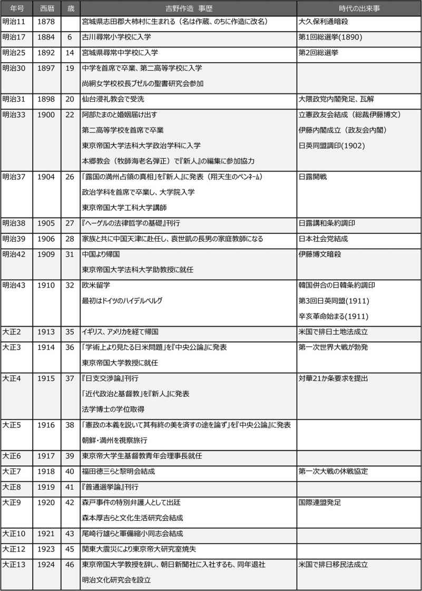
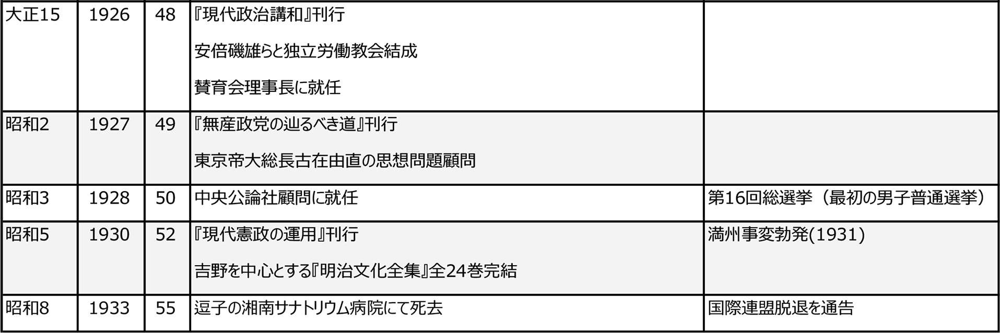
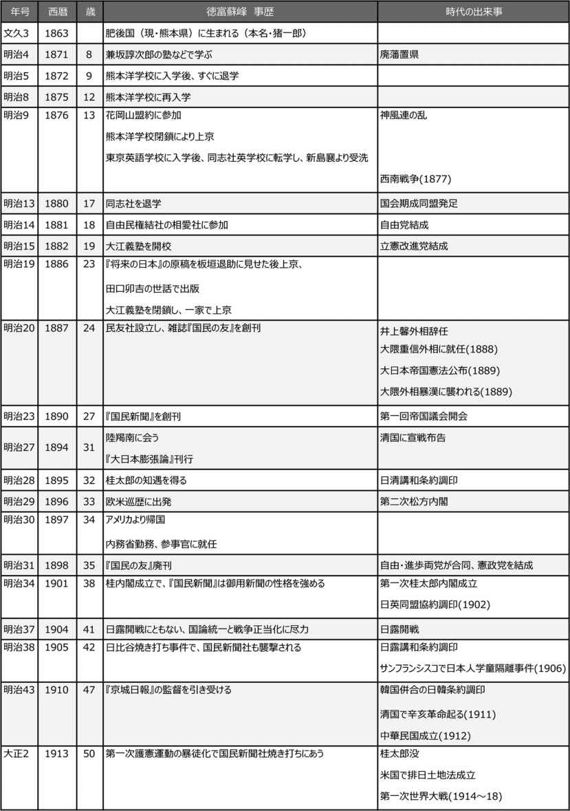
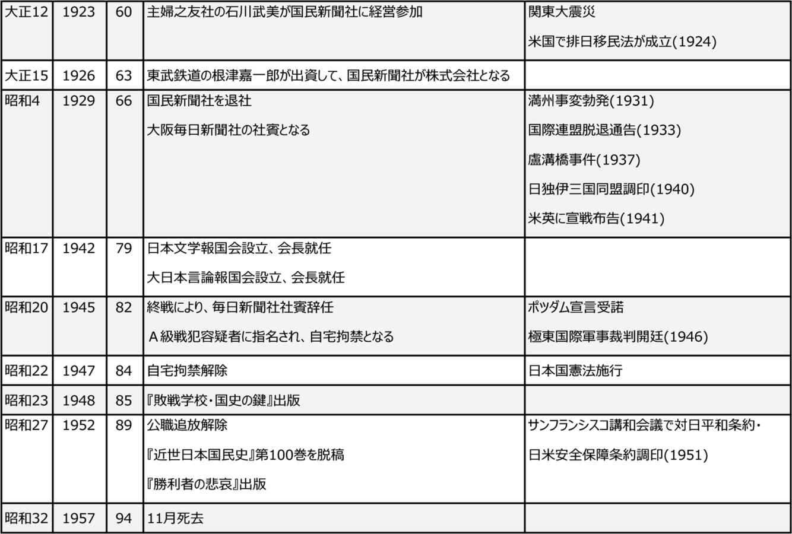
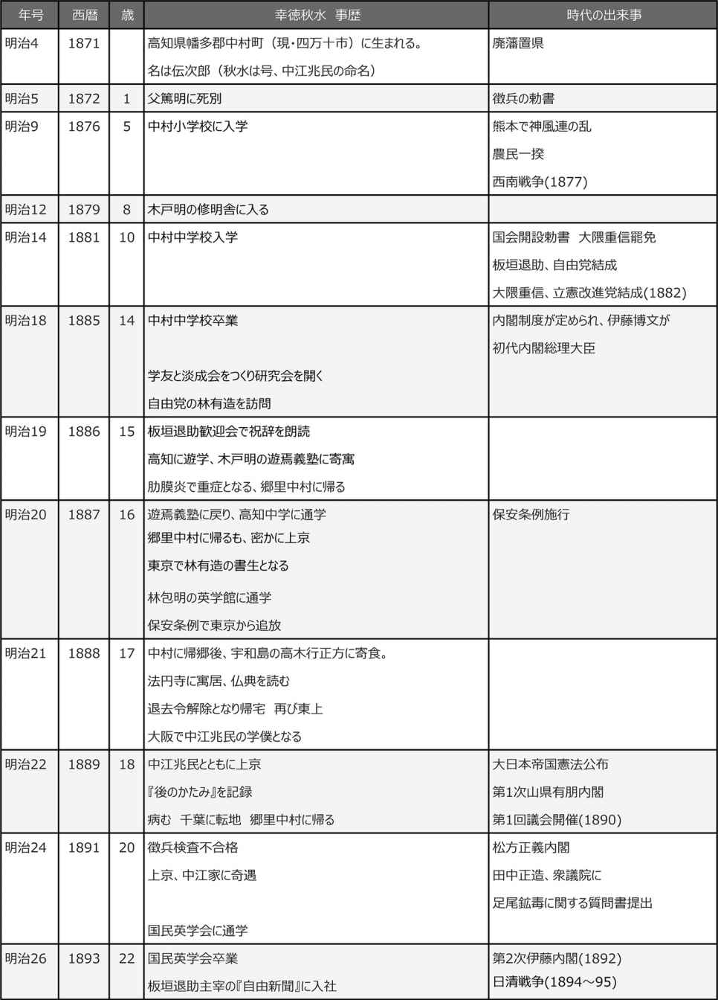
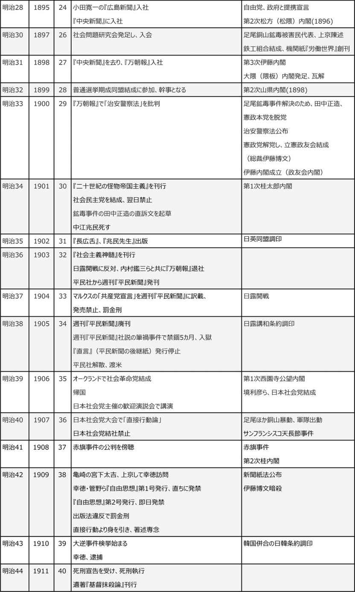
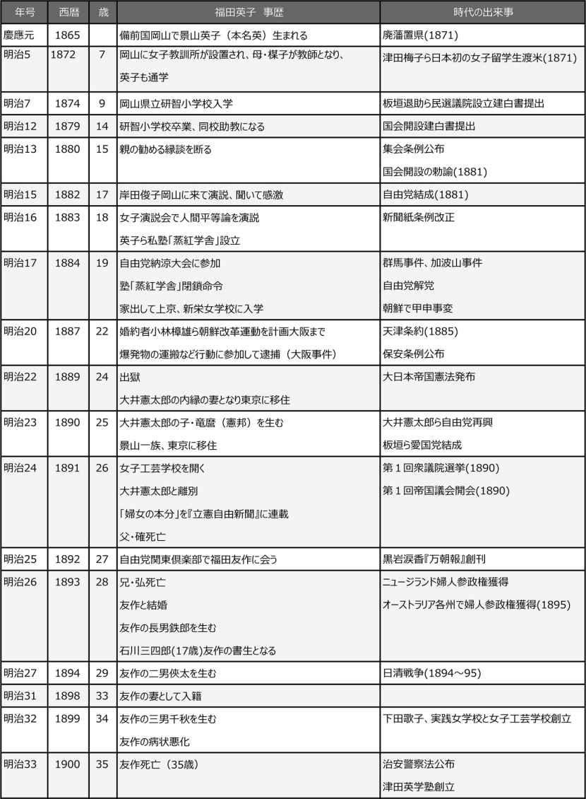
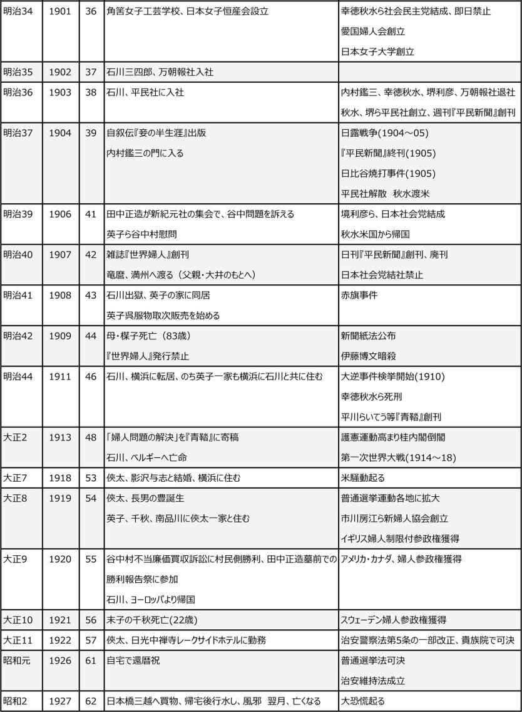
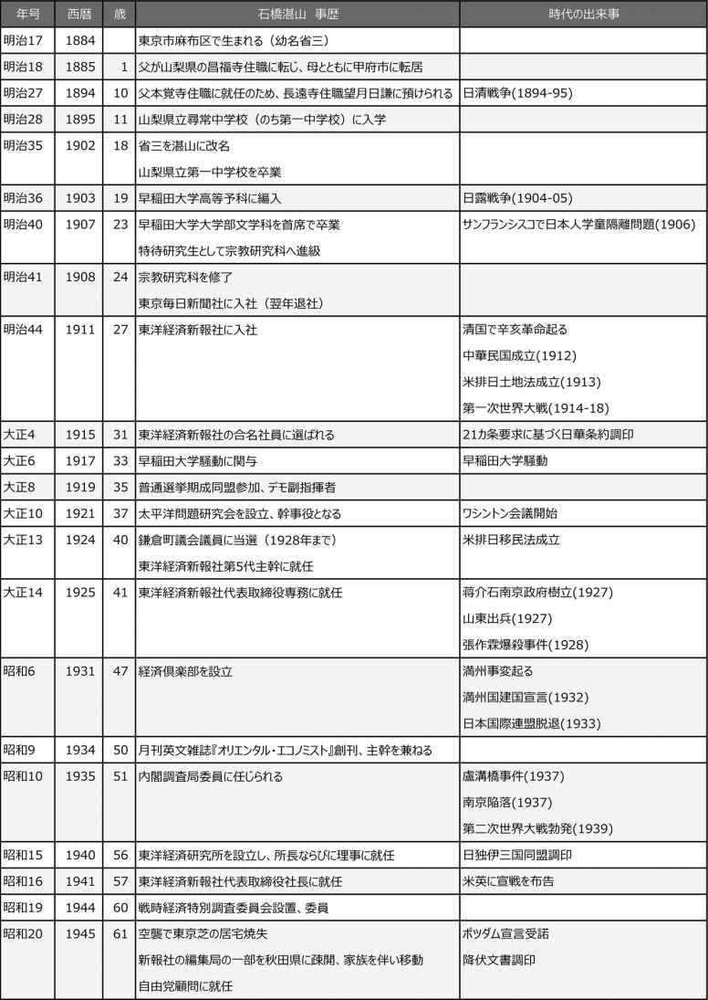
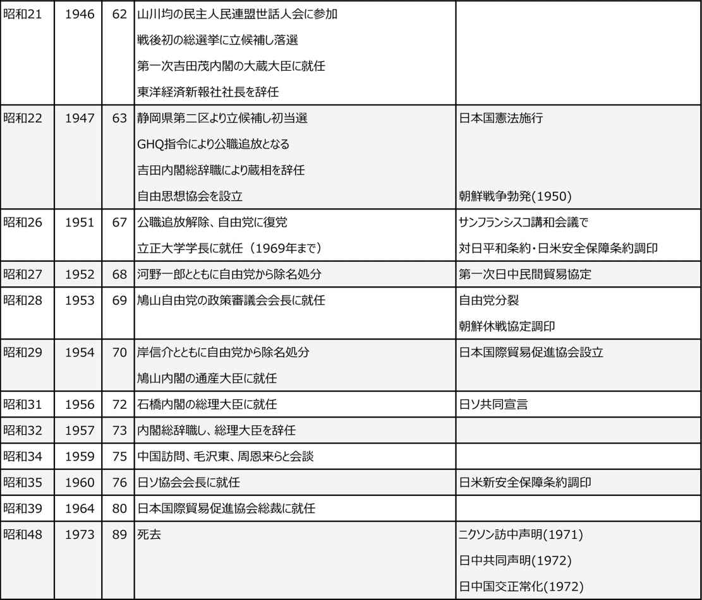

| [明治150周年記念] 名著から問題を読み解く! 明治から日本の未来を考える (5) 明治人物誌[5] (impress QuickBooks) | |
| 平田 周三 | |
| 株式会社インプレス (2018) | |
吉野作造
松本三之介 著
東京大学出版会
2008年1月
ISBN：9784130141611
目次紹介
序章 生い立ち
第１章 若き日の思想と行動
第２章 民本主義の誕生
第３章 デモクラシーの戦い
第４章 新しい国際秩序に向けて
第５章 政党内閣期の内政と外交
終章 デモクラシー論をめぐって
補論 吉野作造と明治文化研究
原著者紹介
松本三之介 (まつもと・さんのすけ)
松本三之介氏は、政治学者。専攻は近代日本政治思想史。東京大学名誉教授。旧制静岡高校を経て、1948年東京大学法学部卒業。東京大学で丸山真男に師事。大阪市立大学法学部助教授(現准教授)を経て、1964年東京教育大学文学部教授、1975年東京大学法学部教授。退官後、駿河台大学法学部教授を歴任。丸山の近世政治思想史研究を引き継ぎ、近世国学や明治期の法思想などの分析を行った。1926年、茨城県生まれ。著書に、『天皇制国家と政治思想』(未來社)、『近代日本の知的状況』(中央公論社)、『明治思想における伝統と近代』(東京大学出版会)、『明治思想史―近代国家の創設から個の覚醒まで』(新曜社)、『明治精神の構造』(岩波現代文庫)などがある。
要旨
吉野 作造 は、大正デモクラシーを代表する人物である。東京帝国大学法科大学にあって、わが国の立憲君主制の下でのデモクラシーの位置づけについて明確な理論的道筋を示した。
吉野は、1878年(明治11年)、宮城県志田郡大柿村に生まれた。小学校時代より大変な読書好きで、村から初めて仙台の中学校に入り、中学を首席で卒業した後、第二高等学校で学び、このとき聖書研究会に参加、洗礼を受ける。東京帝国大学法科大学に入学し、小野塚喜平次教授から多くを学び、本郷教会の海老名弾正牧師に傾倒するとともに、海老名が創刊した雑誌『新人』の編集を手伝い、政治関連の時評に多くの寄稿を行った。
大学院に進んだ後、時の中国の政治実力者袁世凱の子息の家庭教師となるため天津に赴任し、3年後に帰国した。東京帝国大学法科大学助教授に就任した後、欧州留学が認められ、ドイツを中心に、大学で受講するかたわら、当時の社会情勢をつぶさに観察した。帰国した翌年、教授になる。
国内政治問題では、天皇統治を国体とする枠組みの中で、デモクラシーをどのように位置づけるかを政治理論として説明するため腐心した。民衆が政治の主体とする民本主義を唱えた。君主統治の国体問題を分離し、民衆を政治の主体に置き、民衆の福利のための政治を行うのが為政者の任務だとした。だが、国民による政治を理念とする民主主義との違いを明確にできないという弱点を持ち、社会主義者らからの批判を受けた。
このような欠陥はあるものの、吉野によるこの民本主義の提唱は、大正という新しい時代が要求する日本政治の在り方について1つの明確な理論的道筋を示すものになった。吉野は、東京帝国大学の堅苦しい法学・政治学者ではなく、現実の政治を重視する柔らかな思想の持ち主だった。
1933年(昭和8年)、55歳で、大正デモクラシー推進の人生を閉じた。
コメント
本書は、原著者が言うように、単なる伝記として書かれたものでなく、むしろ内容の中心は、わが国の国体にデモクラシーをどう取り入れ、その理論化について専門的な分析を試みたものである。民本主義についての諸氏による専門的議論は煩雑かつ難解なところもあるので、議論の詳細は割愛し、明治末期から大正へ移行する時代を、吉野作造がどのように考え、理論化を試みたかを紹介する。理論よりも現実の政治に立って吉野はデモクラシーの実現を考えた。
普通選挙の必要性を唱える吉野に、元老たちは民衆に政治を理解する能力はないと反対したのに対し、立候補者を選ぶ判断は、具体的政策ではなく、議員となるべき人の人格を評価するのだから誰でもがその判断力を有していると反論した。このことは、現代においても通じるのではないか。


縮約
１．若き日の吉野作造
生い立ち
吉野 作造 は(名は作蔵だったが、子どものとき早くから字を書くのが好きだったことから、蔵の字が難しいからと「造」と書かせたのが通り名になり、のちに作造と改名した)は、1878年(明治11年)1月、宮城県志田郡大柿村(現在の大崎市古川)に生まれた。古川は、仙台から北に約45キロ、宿場として栄えた。父年蔵の長男として生まれ、二人の姉がいる。吉野の生家は「綿屋」、綿製品の製造販売を行っており、そのかたわら新聞雑誌の取次ぎも扱っていた。
読書好きだった作造は、小学校を首席で卒業、1892年(明治25年)、宮城県にただ1つしかなかった仙台の県立中学に入学した。村にとって初の中学校入学者である。出発の日、小学校の生徒が町はずれまで見送るという騒ぎだった。当時の中学校長は、地元藩出身で『言海』の著者大槻文彦だったことから、優秀な教師が集まっていた。先生たちの感化を受けて、多読であり、雑誌にも盛んに投書した。博文館発行の『筆戦場』という雑誌の懸賞文で一等賞をとっている。一時数学にはまったが、やがて哲学へと興味は向かう。
第二高等学校に入学するとき、哲学志望だったが、知人が吉野の願書に法科志望と書いたため、そのまま法科に進むことになった。吉野は無試験入学の特典が与えられていた。高校在学中も、読書趣味は続いた。
尚絅(しょうけい)女学校のブゼル校長のバイブルクラスに参加し、1898年(明治31年)に仙台浸礼(バプテスト)教会で受洗し、クリスチャンになった。高校を卒業すると、東京帝国大学法科大学に進んだ。吉野は大学で大きな影響を受ける二人の師に出会う。一人は本郷教会牧師の海老名弾 正 、もう一人は東京帝国大学で教えを受けた小野塚喜平次教授である。
海老名弾正の雑誌『新人』の編集に関わる
1900年(明治33年)、東京帝国大学法科大学に入学した吉野は、当時「書生の教会」といわれた本郷教会の日曜礼拝に出席し、牧師の海老名弾正の説教に感銘を受けた。海老名の真理を求める意欲と科学的な態度が吉野の心をとらえた。
その海老名が、雑誌『新人』を創刊した。早急に執筆陣を強化する必要から、大学に入学してまもない吉野も原稿を書き、編集を手伝うことになった。宗教・道徳問題に限らず、教育、文化、政治と広く問題をとりあげたこの雑誌で、吉野は主として政治問題に関する時評を担当した。
東京帝国大学法科大学の学生として、吉野は小野塚喜平次の政治学から多くのことを学んだ。小野塚は、欧州への留学から帰ったばかりで、吉野はその新しい考えに傾倒した。小野塚は、政治を為政階級の術とはみず、国民生活の重要な活動だとした。
ほかに、学生生活で吉野が惹かれたのは、法律学の権威穂積 陳 重 だった。温厚寛怒 な人柄と自由闊達な学風によって、学生たちの間で声望が高かった。難解なヘーゲルの法哲学を教えられ、吉野はその講義をもとに『ヘーゲルの法律哲学の基礎』を大学院に進学した翌年出版している。
1904年(明治37年)、東京帝国大学を卒業し、政治史研究のため同大学大学院に入った。入学した年、日露戦争が勃発し、日本が多難な時期に遭遇していた。吉野の関心は、理論的な政治学ではなく、現実態としての国家、事実としての政治の探求にあった。
中国での3年間
1906年(明治39年)1月、吉野は、時の中国における政治の実力者の一人袁世凱 の長男の家庭教師を頼まれて中国、天津に赴任した。当時の吉野は、高校在学中に結婚し、大学卒業のときはすでに2人の娘がおり、まもなく三女も生まれて、家計のやりくりは並大抵でなかった。実家では、出資していた工場が焼失し、倒産したため、学資の援助を期待できるような状況にはなかった。
当時日本では、中国の改革には袁世凱の存在が大きいとみられていたことから、袁世凱と関係を持つことに強い興味があったが、吉野としては生活問題を解決するためにも中国行きが必要だった。吉野は家族を伴って中国に向かった。
しかし、中国では、袁世凱に会うこともままならず、そのうえ、月々の俸給もきちんと支払われない不安定な生活から、袁世凱の息子の家庭教師を務めながら、駐在していた日本陸軍の将校のために戦時国際公法の講義を行う仕事も引き受けた。また、袁世凱によって天清に開校したばかりの専門学校「北洋法政学堂」で教壇に立ち、政治学および国法学の講義も行っている。
吉野は、中国の為政者や役人には愛想をつかしたが、中国近代化の原動力は民衆にあることを見抜いた。このことが、後の吉野の中国観に大きく影響する。1909(明治42年)年1月、袁世凱が失脚したのを機に、吉野は帰国した。
欧米留学
日本に戻ってすぐに、期待していた東京帝国大学法科大学の助教授になった。そして翌1910年(明治43年)、政治史および政治学研究のためドイツ、イギリス、アメリカへの留学を命ぜられた。
妻と5人の子供を東京に残して留学するが、心配は留守家族の生活資金だった。毎月の生活は、大学からの月給が50円、出費は月額100円ほどかかり、原稿料収入でなんとかまかなっていた。困った吉野は海老名弾正に相談し、その紹介で徳富蘇峰に会い、蘇峰を通じて、逓信大臣兼鉄道院総裁の要職にあった後藤新平から毎年500円を3年間、支援を受けることが決まった。後年、吉野は、その恩を忘れず、後藤新平の命日には、墓参りを欠かさなかった。
欧米における3年間は、吉野にとって新しい見聞と知的な刺激に満ちた日々となった。ハイデルベルグ、ミュンヘン、ウィーン、ベルリンと、主にドイツで過ごした後、パリ、ロンドンに滞在し、アメリカ経由で帰国した。吉野は、滞在先で個人教師を雇い、英・独・仏・伊などの外国語を習得に力を入れている。
留学中は、大学での講義を聴講するかたわら、議会の傍聴、裁判所の見学、博物館・美術館の見学、史跡の訪問、オペラ見学、各地の学校訪問や授業参観、病院の見学、工場見学、農村の生活体験など、ヨーロッパ社会の実体をつぶさに見て回った。
ヨーロッパでも深く印象に残ったのは、市民、とりわけ女性が男性に劣らず積極的に社会で行動する姿だった。大学の講義にはさほど魅力を感じなかったが、市民が出席して熱心に聴講していることに驚いた。ヨーロッパの民衆や労働者が、社会的道徳や節度をきちんと身につけていることも、滞欧中の吉野に強い印象を与えた。
帰路アメリカに立ち寄るが、妻の病気の知らせを受け、日程を詰めて帰国したため、アメリカ滞在はわずか5日になってしまった。
帰国した翌年、晴れて東京帝国大学教授になった。36歳のときである。
２．吉野作造の思想と時代背景
明治から大正へ
吉野が欧州留学から帰国した1913年(大正2年)は、日本の政治や社会に流動化の状況が起き始めた時期だった。その1年前、明治天皇が死去し、年号は大正に変わった。明治という時代思想の転換を知識人たちは感じていた。
1914年(大正3年)に第一次世界大戦が勃発した。イギリス、ドイツをはじめヨーロッパ諸国は戦禍で疲弊し、ロシアは社会主義の国になりつつあった。第一次世界大戦で無傷だった米国は、イギリスに代わって影響力を拡大していた。世界の情勢は、帝国主義から民主主義へと変わろうとしていた。
国内では、大正デモクラシーが新しい時代の象徴となった。1924年(大正13年)、貴族院を基盤とする清浦 奎吾 内閣に代わって、選挙戦の結果、加藤高明を首班とする政党内閣が実現し、翌年には、男子普通選挙法が成立した。大正初年の第一次憲政擁護運動以来、民衆の政治運動が盛んになっていた。
国際社会における日本の地位は、日露戦争での勝利によって、著しく高まっていた。その一方で、列強、とくに米国の日本に対する警戒心が強まりつつあった。国民は日本が西欧に肩を並べる一等国になったと喜んだが、欧米の日本に対する見方は厳しいものだった。人種差別的傾向が強まった。これを不当とする国民世論は高まり、多くの知識人も、米国非難を強めた。わが国に新たなナショナリズムが台頭してきた。
日本の国際的存在感の増大
日露戦争後、欧米も日本を世界政治の舞台から除外することはできなくなり、世界政治の東洋への拡大を吉野は意識した。その中でアジアの民族意識の高まりを強く感じていた。日本固有の民族意識をもとに、アジア民族という集団概念に発展させて、欧米との対比によってその存在意義を強調しようとした。国家の個別的な目先の利益よりは、国家を超えた普遍的な正義や人道を重視すべきだというのが吉野の考えだった。個人の自由と平等を基本原理とするデモクラシーが広く国内社会で受け入れられるようになったのと同様に、国際社会においても国と国との関係は、事実上の国力の強弱にかかわらず、自由平等の原則によって規律されなければならないと説いた。
国家の主権的権威に代わって、国家を超えた「道徳的権威」が国際社会の新しい秩序原理に変わったとしたが、目の前の国際政治の現実は、なお軍事的膨張主義や帝国主義が渦巻いていた。吉野も、現実問題については、対中国21カ条要求を支持したことに象徴されるように、国力の拡大・強化の必要を認めざるを得なかった。
しかし、第一次世界大戦後、国際連盟の設立など、理想主義的な国際協調主義の高まりが新しい世界の潮流になるのを見て、吉野は勇気づけられた。国内政治についても、富国強兵的国家理想からの転換を主張した。
国内問題についての吉野の論説
吉野は、東京帝国大学教授の職にあって、『中央公論』などの雑誌に積極的に論説を発表し、政治論、法律論の分野をリードする立場にあった。発表された諸論説の中で、『中央公論』に掲載された次の3篇が注目に値する。
「学術上より見たる日米問題」(1914年1月)、「民衆的示威運動を論ず」(1914年4月)、「憲政の本義を説いて其有終の美を済すの途を論ず」(1916年1月)。
「学術上より見たる日米問題」
この論説は、アメリカにおける日本人排斥の問題をとりあげ、その解決策を述べたものである。1913年(大正2年)のカリフォルニア排日土地法の成立は、日本に大きな衝撃を与えた。日本政府は強くこれに抗議し、東京の国技館では、同法案の成立を目前にして、対米問題国民大会が開かれ、1万余の聴衆が集まった。吉野の「学術上より見たる日米問題」は、このような状況下で書かれた。
吉野は、この問題について、冷静に次のような主旨のことを述べた。
「たしかにアメリカの側に黄禍論のような日本人に対する誤解や偏見があるが、基本的には日本自身の側に問題があるのではないか。日本人移民の移住の動機は、個人的ないし国家的利己心にあって、相手国たるアメリカの建国の理想を理解しようとする気持ちが見られない。そのようなことでは、アメリカにかぎらず、世界のどの地域でも、日本人が快く受け入れられることは期待できない」
吉野は、排日問題の根本的原因を、これまでの日本の教育が、国境をこえて広く世界や人類を見つめる普遍的な視点や発想を欠き、ひたすら内向きで国家に忠誠な国民の創出に終始してきた、その偏狭さにあると批判した。
「民衆的示威運動を論ず」
この論説は、『中央公論』が「民衆の勢力によって時局を解決せんとする風潮を論ず」という課題を示して識者に寄稿を求め、吉野がこれに応じて書いたものである。
吉野は、民衆がその政治的意思を社会に表明するということは、憲政の発達にとって喜ぶべきことである。立憲制の下では、その民衆こそ政権運用の主体となることが政治の基本原則として尊重されるべきであり、明治憲法制定以来つづけられてきた閥族と言われる少数特権者たちの意思で行われる政治に終止符を打つことができると説いた。
さらに、民衆政治が天皇統治の国体に反し、天皇の内閣総理大臣の任免大権を定めた明治憲法と相容れないとする考えは、藩閥勢力が政権を維持する上で便利な理論でしかないというのが吉野の主張だった。
立憲政治における民衆の政治参加は、子供に刃物を持たせるようなものだと危険視し、衆愚政治や暴民政治に陥る弊害を指摘する保守派の論を批判し、民衆政治は人民の相当の発達を前提にするのは当然としながらも、人民に求めるものは、具体的政策の評価ではなく、「人格の判断」であるとした。つまり、候補者になって争っている人が、どっちが立派な人か、信頼に足る人か、国事を託するに足る人かということを判断するもので、具体的な政策の是非や候補者の政見の判断ではないとした。
「憲政の本義を説いて其有終の美を済すの途を論ず」
この論説で吉野は、立憲政治が健全な発展を遂げ、十分な成果をあげるためには、国家の根本法規である憲法の条文のみに目を奪われることなく、近代文明の必然的産物である各国憲法の根底にある「共通の精神」を理解し、それを政治の運用に生かすことの重要性を主張した。そしてこの各国憲法に共通する「精神的根柢」を、吉野は「民本主義」と名づけた。民本主義は、デモクラシーの意である。
吉野によるこの民本主義の提唱は、大正という新しい時代が要求する日本政治の立憲主義化＝憲政擁護・閥族打破を、天皇統治の国体論や天皇主権の憲法論との摩擦を避けつつ、いかに達成するかについての1つの明確な理論的道筋を示した。『中央公論』に掲載されたこの憲政の本義に関する吉野の論説は、98頁に及ぶ長大なものである。
３．民本主義の思想
民本主義の提唱
大正デモクラシーを代表する吉野の思想として、その中心に民本主義がある。すでにこの言葉は、上杉慎吉、茅原華山らが用いて論説を書いていたが、それぞれに相違があり、吉野が中央公論(1916年1月号)に載せた「憲政の本義を説いて其有終の美を済すの途を論ず」で示した民本主義は、政治学に基づく体系的な理論となっている。
吉野は、民本主義はデモクラシーの訳語だとしているが、デモクラシーには2つの意味があるとした。1つは、国家の主権は法理上人民にあるという意味であり、もう1つは国家の主権の活動の基本的目標は政治上人民にあるべしというものである。この2つの意味がこれまでわが国で混同されてきたとし、そのため前者を民主主義、後者を民本主義の語をあてることにしたと説明している。
理論的には、主権の法的所在と政治的運用とを区別し、政治論を法律論から解放した独自の意義を明らかにしたところに吉野の強みがあった。天皇主権の問題を法律論としてカッコに包み、主権が法律上君主御一人の掌握に帰しているということと、君主がその主権を行用するにあたってもっぱら人民の利福および意向を重んじるということとは完全に両立し得るとしたのである。
天皇を絶対的な君主とするが、実際の政治を行う者は、「少数の賢者」、すなわち実際の政治において政策を立案し、法律を制定し、政権を運用する権力エリート＝職業的政治家であるとし、一般民衆はこのような政治の世界の外部に位置して、その政治の動向を観察し、その動態が生み出す実績にもとづいて「少数賢者」を判定するのがその役割であると定義した。
民衆にそのような判定を行う能力があるかという疑問が、常に保守勢力側から提出される問題だった。これに対し吉野は、政治的政策の立案や実行を行う能力が不足するから「少数賢者」に委託するのであり、「少数賢者」を監視するのが議会であり、議会を構成する議員を選ぶ人民には、具体的な政治知識や個々の政策についての判断力ではなく、選ぶ候補者の人格の判断力があればよく、そのような道徳的評価であれば、民衆の誰にでも可能だとした。
吉野の論に対する批判
この吉野の考えに、社会主義の立場から厳しい批判を加えたのは山川均だった。山川は、吉野の民本主義論が理論的な破綻を繕うため、主権の所在をめぐる問題を回避しようとして、実際には区別できない民主主義と民本主義をそれぞれ別の概念としたことを責めた。政治の目的が分からないまま、「目的を最も有効に達すべき方法」を民本主義としたというのが、山川の指摘だった。デモクラシーの精神は、かつて特権階級の専制的支配に対する商工階級の闘争として展開された歴史だったと主張した。
吉野は、民本主義には、政治は一般民衆のために行われねばならないという「政治の目的」に関する部分と、政治は一般民衆の意向によって行われねばならないという「政策の決定」の2つの内容(二大要綱)があるとした。
しかし、これに対して早稲田大学教授の北昤吉らの厳しい批判があった。批判のポイントは、吉野の論はつきるところ君主主権との対立を避けるため主権論を排除したこと、政治の目的と方法を別個の概念として切り離したことにあった。
これについては、吉野も北の批判を認め、再度『中央公論』に「民本主義の意義を説いて再び憲政有終の美を済すの途を論ず」(1918年1月)を発表し、先に「2つの内容」と説明したのは誤りで、民主主義という1つの言葉によって「政治上における2つの異なった概念」を意味するものであると訂正した。
さまざまな批判をくぐり抜けるなかで曲折を重ねる結果となり、その過程で、政治の目的と方法の分離を、結局、相互に深い関係があるものと当初の意見に戻すなど、吉野の民本主義論は混乱した。
しかし、理論的混乱はあったが、吉野は、大正デモクラシーの思想的先導者として華々しい脚光を浴びた。その民衆政治論は、わが国の立憲政治におけるデモクラシーについて実践的役割を果たしたことは間違いない。
４．デモクラシーの戦い
藩閥官僚対政党勢力
民本主義論の提唱とその理論化に吉野が取り組んでいた頃は、台頭する政党勢力を前にして藩閥官僚勢力がその特権的地位を維持しようと虚々実々の駆け引きと競い合いを繰り広げた時期にあたっていた。1914年(大正3年)、山県有朋を中心とする元老たちの推薦で政権の座についた大隈重信は、加藤高明を総裁とする立憲同志会および尾崎行雄らの中正会から成る政党勢力と、山県・桂系の官僚勢力とを支柱として内閣を組織した。山県らの狙いは、世間の人気を得ていた大隈を利用して、政友会を抑え込むことにあった。
第一次世界大戦の参戦を決定、中国に対する21カ条の要求など、対外進出政策を積極的に進めた大隈内閣だったが、政友会議員の買収工作や、たびかさなる失政で世上の人気は急速に衰え、元老の支持も弱まり、結局、総辞職へと追い込まれた。
大隈内閣の後を継いだのは、長州出身の陸軍軍人で、陸相・朝鮮総督などを歴任した寺内正毅だった。寺内は、政党との提携という選択肢を捨て、挙国一致の名のもとにあえて超然内閣の道を選んだ。これに対して、世間から厳しい批判の声が上がった。吉野もまたその例外ではなかった。
米騒動
第一次大戦下の好景気の中で、船成金・鉄成金などの言葉が流行する一方、民衆の生活はそれとは裏腹にインフレの進行によって苦しい生活を強いられていた。ことに米価は上昇を続け、1918年(大正7年)に入って、大米穀商や地主の投機的な買占めや売り惜しみに拍車がかかり、さらなる米価暴騰が民衆の苦しみを増した。そのとき起きたのが米騒動である。
同年7月、米価の暴騰に耐えかねた富山県魚津町の漁民妻女ら数十人が、米の県外船積み中止を要求して起ちあがったのがきっかけで、騒動はたちまち全国各地に広がった。この間、政府はほとんど無策に終始した。
寺内内閣は米騒動が発生すると、それが各地へ波及することを恐れて、ただちに騒動に関する新聞記事の差し止めを各地方長官に通達した。新聞各社はこの措置に抗議し、内閣弾劾・言論擁護の運動に立ち上がった。
白虹事件
かねてから言論の自由尊重を基本路線とし、寺内内閣に対決姿勢をとっていた『大阪朝日新聞』は、しばしば発売禁止の処分を受けていたが、1918年(大正7年)8月、掲載した記事の中の「白虹日を貫く」という言葉が中国の古語で天下に革命が起こる予兆を意味するとして、夕刊を発禁処分にした。政府や検察に同調して、右翼団体が大阪朝日の社長村山龍平を大阪中之島公園で襲い、右翼浪人会が国体擁護を掲げて同新聞を誹謗するキャンペーンをくり広げた。存続の危機と感じた村山社長は辞職し、リベラルな立場を担ってきた編集幹部も退社した。
この事件(白虹事件と呼ばれる)に関して、吉野は中央公論(1918年11月号)に「言論自由の社会的圧迫を排す」を載せた。これが、浪人会をいたく刺激し、吉野の研究室に会の代表が押しかける事態になった。交渉の結果、後日、公開の立会演説会を開くことで決着した。
神田の南明倶楽部で開催された演説会には、会場に入りきれぬ2000名もの学生・労働者が集まった。浪人会側の弁士4名、これに吉野一人で立ち向かった。立合演説会は、筋道立った吉野の弁舌が終始相手側を圧倒した。
黎明会結成
吉野と浪人会との立会演説会は、自由な言論の意義とその強さについて人々の認識を呼び覚まし、デモクラシー陣営に自信と勇気を与えた。
この流れを受けて、1918年(大正7年)12月、日本の革新を志す知識人たちが思想団体「黎明会」を立ち上げた。「黎明会」は吉野らを中心として結成された。この会は、世界共通の正義や文明に基礎づけられた新しい日本国家のあり方を追求することを目的とした。
1924年(大正13年)、吉野は東京帝国大学教授を辞して、朝日新聞編集顧問兼論説委員として同社に入社した。入社してすぐ、入社の披露を兼ねて時局問題の演説会が大阪、京都、神戸で開催された。このとき神戸で行った、「現代政局の史的背景」と題する演説と、『大阪朝日新聞』に掲載した論説「枢府と内閣」が検察当局により問題とされる事態が起きた。釈明書を提出するなどして起訴は免れたが、このため朝日新聞社を退社せざるを得なくなった。
第一次世界大戦後、知識人の関心は、選挙権の拡張といった政治制度の改革から、資本主義制度の下における国民生活の現実を覆う社会的不公正の改革への視線の移動、「政治問題より経済問題へ」あるいは「形式的問題より実質的問題へ」という問題関心の推移は、当時の青年学生たちにも影響を及ぼさずにはおかなかった。経済問題は、社会問題、労働問題へと変わっていった。
1925年(大正14年)、普通選挙法が成立した。選挙権は25歳以上(被選挙権は30歳以上)の男子に限定されるなどの不十分さを残すものであったが、ともかく普通選挙制の実現にこぎつけた。そのとき吉野は、肋膜炎を悪化させて入院生活を余儀なくされ、病床にあった。
吉野は、新しく選挙権者となった多数の民衆が、腐敗した既成政党や金権政治家にきびしい審判を下し、政界清浄化は前進すると信じたが、現実はその期待にはほど遠いものになった。
吉野の晩年、日本は満州事変を契機に軍部勢力の台頭がますます顕著となり、対外的には国際的な孤立へと向かいつつあった。こうして日本の議会政治が岐路に直面するなかで、吉野は、民衆の持つ「見えざる大きな牽制力」に最後まで期待を託し、日本の行く末を案じつづけつつ、その生涯を終えたのである。
1933年(昭和8年)、55歳であった。
徳富蘇峰
日本ナショナリズムの軌跡
米原謙 著
中央公論新社
2003年8月
ISBN：9784121017116
目次紹介
第１章 新世代の「青年」の誕生
第２章 平民主義のリーダーとして
第３章 「膨張」への意欲 ―日清戦争
第４章 「世界の同情」をもとめて ―日露戦争
第５章 「白閥打破」から「亜細亜モンロー主義」へ
第６章 閉塞するナショナリズム
終章 ナショナリズムの「再生」―第二次大戦後
原著者紹介
米原謙 (よねはら・けん)
米原謙氏は、日本の政治学者・歴史学者。大阪大学大学院法学研究科博士課程修了。下関市立大学講師、助教授を経て、1989年大阪大学教養部助教授、1994年同法学部教授、1998年大学院国際公共政策研究科教授などを歴任し、2013年定年退任。その間、パリ第四大学(フランス政府給費留学生)、東京大学法学部(文部省内地研究員)、パリ政治学院(客員研究員)などで研究に従事した。1948年徳島市生まれ。著者に、『日本近代思想と中江兆民』(新評論)、『兆民とその時代』(昭和堂)、『植木枝盛―民権青年の自我表現』(中公新書)、『日本的「近代」への問い―思想史としての戦後政治』(新評論)、『近代「日本」のアイデンティティと政治』(ミネルヴァ書房)などがある。
要旨
徳富 蘇峰 は、1863年(文久3年)肥後国(現・熊本県)の惣庄屋の家に生まれた。熊本洋学校を出て、上京し東京英語学校に入るも、新島襄にあこがれ同志社英学校で学ぶ。自由民権運動を志し、故郷で塾を開いて教育にあたるが、23歳のとき新聞記者をめざし上京した。そのとき書いた『将来の日本』が出版されると大ヒットし、若者たちのヒーローとなり、民友社を設立し、雑誌『国民の友』を創刊、続いて『国民新聞』を創刊し、論陣を張った。
藩閥政治に反抗し、平民主義を唱えて大正デモクラシーの推進者になったが、政党の堕落と無力化を目にし、次第に政府との関係を強め、第二次松方内閣で内務省勅任参事官に任じ、桂内閣のとき、『国民新聞』は政府の御用新聞となった。日露戦争の正当化に努め、海外列強との調和を強調するが、日露戦争後の欧米、とくに米国の日本に対する蔑視、愚弄化に日本の国際的孤立感を深めるのを見て、蘇峰は次第にナショナリズムに立ち、アジア主義へと転向していった。
アジア主義では、中国・韓国を盟友として白閥(欧米保守派)に対抗する存在になるべきだと論じたが、辛亥革命による中国の変貌を見誤り、望んではいなかったアジアの盟主をめざす道を進む運命にあった。米国との対立を恐れ、日米戦争の回避の必要性を認識していたが、清国を倒して成立した中華民国を米国が支援に回ったため、日米の対立は避けられない状況に陥っていった。
関東大震災で財政基盤を失い、経営を東武鉄道の根津嘉一郎に譲り、国民新聞社から身を引いた。執筆活動は衰えることはなかったが、もはや政治や社会への影響力は薄れていた。
第二次大戦中は、設立された日本文学報国会会長、大日本言論報国会会長に就任し、『必勝国民読本』を出版した。
戦後は、A級戦犯容疑者に指名され、自宅拘禁となり、公職追放にもなったが、なお執筆活動は止むことを知らなかった。1947年(昭和22年)、自宅拘禁を解除され、翌年、『敗戦学校・国史の鍵』、『国史随想』を発刊、1952年(昭和27年)『近世日本国民史』第100巻を脱稿した後、『勝利者の悲哀』を出版し、勝利した米国について苦言を述べるとともに、国民に対して臥薪嘗胆 の必要性を訴えた。1957年(昭和32年)、94歳の生涯を閉じた。
言論活動に生きた蘇峰は、明治・大正・昭和の風雪に耐え、時代の転変とともに自らの立場を組み換えながら、つねに数歩前を見て行く先見性を持っていた。幾多の屈折を経験した蘇峰の言論の軌跡を、単なる転向の歴史とみることはできない。蘇峰の軌跡は、自身で近代日本国家の自立・挫折・再生の物語を体現している。
コメント
日清戦争が起きて以後、政府側に立ち、日清、日露、第一次大戦の戦争の時代、それを支持する論を展開した徳富蘇峰を、平民主義を唱えるデモクラシーからの転向者とだけ私はみていた。戦争に加担するナショナリストとして言論界に君臨する存在だったが、本書を読んで、蘇峰の思想の屈折や転向の中に、日本が明治から昭和に向かって進まなければならなかった道程が理解できた。『勝利者の悲哀』が2013年に復刻・出版された。近年の我が国の右傾化の流れを見て上梓されたのではないと信じたいが、蘇峰が苦悩した姿をそこに読み取るならば、今後のわが国の対外関係を考える上で参考になろう。


縮約
１．徳富蘇峰の青春時代
生い立ち
徳富 蘇峰 (本名は猪 一郎 といい、「蘇峰」の号は『国民の友』創刊以後使われた)は、1863年(文久3年)、肥後藩(現在の熊本県)の郷士の長男として生まれた。郷士には家禄はない。開墾するなど、自力で稼がなければならなかったが、代々惣 庄屋 を務めた家柄で、家計は豊かで、名望家だった。4人続けて女子だったが、蘇峰は待望の嫡男だった。母は厳しかったが、大事に育てられた。
父親が、儒者横井小楠(のちに越前藩主松平慶 永 のブレーンとして活躍する)の弟子だったことから、蘇峰はいくつかの塾で修学するが、年齢不相応の教育が施されたので、同年輩の友人はいなかった。地方名望家の長子として特別扱いされてきたことから、塾では慣れない環境に置かれた。
1870年(明治3年)5月、熊本藩政の大規模な刷新が行われ、その一環として熊本洋学校が創設された。米陸軍士官学校出身の元軍人のジェーンズが教師としてやってきた。蘇峰は開校の翌年9歳で洋学校に入学したが、年少を理由にまもなく退学させられた。それから3年後に再入学している。
上京、そして京都の同志社に入学
1876年(明治9年)1月、花岡山盟約と呼ばれる事件が起きた。キリスト教をめぐる学内の対立で、蘇峰は、キリス教信仰を守るグループ(のちに熊本バンドと呼ばれる)に参加していた。この事件後、熊本洋学校は閉鎖され、ジェームズは、関係のあった京都の同志社に、盟約事件の有力分子を入学させた。
父母と相談した結果、蘇峰は京都には行かず、東京に向かった。叔父の家に下宿して東京英語学校(一高の前身)に入学したが、2カ月経たないうちにやめて京都に行く。京都では、熊本時代の親しい仲間がいた。その紹介で、同志社を創立した新島襄に会い、入学が許された。このとき新島襄が33歳、蘇峰はまだ13歳だった。蘇峰は新島襄に魅力を感じていた。その年の12月、洗礼を受けた。
しかし、1880年(明治13年)5月、卒業まであとひと月というとき、同志社を退学した。前年に起きていたクラス合併問題に端を発する上級クラスのストライキが原因だった。この頃、キリスト教への信仰にゆらぎはなかったが、同志社での学問のあり方には批判的になっていた。蘇峰は、同志社を退学して東京に向かった。新島への帰依と呪縛の感覚から解放されたともいえる。上京して新聞記者になろうと思った。
２．平民主義のリーダーをめざして
新聞記者をめざす
1880年(明治13年)5月、新島襄の説得をふりきって東京に向かった。蘇峰は、新聞界での成功をめざしていた。
明治初期には、たいした地位ではなかった新聞記者という仕事が、大きく変わったのは、福地源一郎が西南戦争の戦線に赴いて『東京日日新聞』に生々しい従軍記事を書き送ったときからである。新聞記者から官吏に登用された者が少なくなかった。植木枝盛や中江兆民のように、記者としての名声を足掛かりに政治家になる例も増えていた。蘇峰は、名利の欲を持って新聞記者になることにあこがれた。
しかし、新聞記者になる道は簡単には開かなかった。1880年(明治13年)から1886年(明治19年)までの6年近くは熊本に戻って生活した。その間になしたことは、主に自由民権運動と私塾大江義塾の経営だった。
熊本は自由民権運動の盛んな地だったが、自由民権運動の活動家の中心世代は、西南戦争のときに20歳から30歳のあいだだった。そのとき14歳だった蘇峰は、早熟で関わりを持ってはいたが、後の世代である。それまでの自由民権が条理を主体としていたことに対し、蘇峰は殖産興業、貿易振興、教育の充実などによって実力を養うことが肝心だと考えた。
大江義塾を開校
帰郷後まもなく、蘇峰は大江義塾を自宅に開いた。開校時に宣言した「大江義塾開校の祝文」に、「これまでの学校は牢獄のようなもので、教師は牧羊者が羊を扱うように生徒を扱ってきた。これでは独立の気象が育たず、卑屈な人民をつくるだけである」と書いた。
1982年(明治15年)に開校した大江義塾は4年半存続した。ここで蘇峰が教えた生徒はのべ250名を超える。『三十三年の夢』(明治35年)を書いた宮崎滔天 も、ここで学んだ一人だが、「塾の教育方針は極端な自由放任主義で、毎土曜の演説会では、自由民権の勇ましい演説が塾内の空気を圧した」と書き残している。生徒には、「先生」ではなく「猪一郎さん」と呼ばせた。
『将来の日本』
蘇峰を世に出すことになる『将来の日本』の最初の草稿を書いたのは1886年(明治19年)、蘇峰が23歳になったばかりのときだった。高知の板垣退助を訪問し原稿を見せたときの反応は芳しくなかったが、もはや後戻りはしないと、東京で田口卯吉に会い、田口の経済雑誌社から自費で出版した。出版されるや、予期していた以上の成功を収め、一躍ジャーナリズムの脚光を浴びることになった。
『将来の日本』は、未来に向かっての日本の方向がどのようなものであるべきかを示そうとしたものである。蘇峰は、「外的な社会環境」、「社会内部の大勢」、「日本の特殊環境」、「日本の現状分析」の4項目について、単純明快な二元論で問題を分析し説明する。
外的な社会環境については、「武備主義」と「生産主義」を対比し、欧米は「生産主義」に立脚しており、最後の勝利を占めるのは「生産主義」(産業型社会)だとする。社会内部の大勢では、平民主義が政治・経済のありかたを一変しつつあるとし、日本の特殊環境では、日本の歴史的・地理的環境から商業国(生産主義)に適合していると説明する。日本の現状分析はとくに力を入れ、現今の日本は過去の分子と未来の分子の戦場となっているとし、自由民権運動に対して、現在の自由主義は日本流もしくは封建的自由主義で、依然として封建的だと厳しく批判し、世代交代の意義と必然性を強調した。
根底には、列強のアジア侵略への危機感があった。東洋は野蛮で、西洋は文明とされるが、それは貧富の関係に還元できる。列強が誇る軍備は、富の関数でしかなく、優勝劣敗を決定するのは「富と智力」であると結論している。
中江兆民は『将来の日本』を高く評価したが、蘇峰が「進化神」(具体策がない)に一任した傍観者の立場に立っているとその弱点を指摘した。
『国民の友』と『国民新聞』の発刊
1886年(明治19年)に出版した『将来の日本』が大好評となり、翌年すぐに民友社を設立し、2月、雑誌『国民の友』を発刊した。人気を呼び、最初月刊だったが、1895年(明治28年)には週刊にまでなった。この間、1890年(明治23年)には『国民新聞』の発行も始めた。まだ27歳に満たない蘇峰は一躍ジャーナリズムの世界で名をなした。
『国民新聞』を通じて、活発に意見を発表した。蘇峰が敵としたのは、貴族的急進主義と保守主義だった。この頃、保守主義が力を回復しつつあった。その中心にいたのが陸羯 南 で、機関新聞『日本』で論陣を張っていた。『国民新聞』はこれに真っ向から対立した。
蘇峰の主張は、「藩閥の旧い体質の政府内部自体には、自ら変化をもたらすことは不可能であり、外からの力による変化しか期待できないこと。外からの力とは平民主義である。平民とは農民と商工民を合わせたものであり、前者は自由党が、後者は改進党が支持基盤としているもので、この両党が連合することが政府を変える力になる」という構図だった。
しかし、事態は蘇峰が考えたようにはいかなかった。政府は地租改正で、自民党を支持する地方の地主層を惹きつけ、それを支持基盤とする自由党を政府支持に変えてしまった。蘇峰は「日本の将来」への展望を見失い、平民主義は色あせていった。
３．ナショナリズムの変貌
蘇峰の変節
民友社を立ち上げ、大いなる飛躍を遂げた蘇峰だったが、めざした世代交代による藩閥政府の打倒は実現せず、その実行のために構想した民党連合も、自由党の政府支持への転換で実現不能となっていた。蘇峰は、1894年(明治27年)、平民主義からナショナリズムへと変わっていくのである。この転換は、政治状況の変化、そして日清戦争の勃発に伴って起こった。
保守主義を嫌っていた蘇峰は、鹿鳴館問題で失脚した急進派の井上馨と条約改正で国民の批判を浴びて外相を辞任した大隈重信に接近した。井上は、蘇峰を抱き込もうと、新島襄を通じて、蘇峰の外遊の便宜を図った。1896年(明治29年)5月から1年間、蘇峰は欧州および米国を巡歴した。帰国した蘇峰は、直後に、内務省勅任参事官に就任した。これに「将来の日本」の読者たちが反発し、蘇峰から離れていった。やがて販売部数が激減し、雑誌『国民の友』は廃刊を余儀なくされる。
1901年(明治34年)、桂太郎内閣が発足すると、『国民新聞』は御用新聞の性格を強めることになる。
起点となった明治27年
1894年(明治27年)、日清戦争が始まった。この年、徳富蘇峰は意識的にハンドルを切った。その転換は、政治状況の変化にともなって起こった。日本ではナショナリズムの過剰な湧出 にともなう政治思想全体の構造転換がしばしばみられる。
条約改正問題は、国民の間にナショナル意識を醸成していた。その後を、日清戦争と三国干渉が引き継いだ。日清戦争後の思想風景はそれ以前とはまったく違ったものに変容した。『国民の友』に載る論説に、「大なる日本」という言葉が頻出するようになる。
国家の拡張は、増加する日本の人口を考えれば、英国のように海外へと発展するのは日本として許されるもので、たとえ他国との摩擦を生じようとも必要なことだとした。日本はペリー来航までは恐懼 される国だったが、その後は軽侮される国になった。日本は、いまこそ世界から敬重される国にならねばならないと蘇峰は訴えた。敬重は、文明力によって得られる。文明力は経済力に支えられるものであり、国家経済は植民と領土拡大によって強化されると蘇峰は論じた。
民党によって藩閥を打破し、平民が主体となる政治を描いた蘇峰の夢は裏切られていく。心の中に拮抗していた平民主義と精神的貴族主義(平民の意見を代表する政治家)は、ナショナルなものへと関心を移動させ始めた。しかし、蘇峰にとって、平民主義と国家の拡張は矛盾するものではなかった。
黄禍論
明治30年代になると、状況はもっと深刻になる。この時期を境に、世界中で人種論が広まった。黄禍論は、黄色人種の台頭が白人にとって脅威になるという主張である。それは最初ドイツ皇帝ウィルヘルム二世が画家に描かせた「黄禍の図」が始まりだとされるが、1906年(明治39年)の米国における学童隔離事件へとつながり、排日土地法(1913年)、そして1924年(大正13年)の排日移民法に至る。
「脱亜論」で福沢諭吉は、アジアを近代化するには、清国、朝鮮の実情からして、アジア人が結束して西洋と対峙することは不可能で、日本は西欧と手を組んでアジアの近代化を実現するほかないと主張した。そのためには、日本が「西洋化したアジアの一国」ではなく、欧米との違いが感じられない国になるべきだと論じた。
蘇峰も、当時、黄禍論を契機に頭をもたげていた新たなアジア主義に断固反対している。人類の共通性を指摘し、「世界一致」が世界の流れであると論じ、アジア主義を唱えることは、日本を苦境に置くことになると警告した。
その理想を実現するためには、列強と協調して帝国主義政策を実行することが必要であり、経済力をもって平和的な大陸への膨張を支持した。蘇峰の主張は、英国の「大英国主義」に倣って「大日本主義」を実践することであった。
しかし、西欧化したとはいえ、日本は「アジア的」であることから逃れられないのが現実だった。日清戦争、日露戦争の勝利によって欧米は日本の力を評価したが、日本の欧化が西欧と同等な存在になったとは認めなかった。欧米の差別的まなざしは、日本人の自尊心を傷つけた。西欧と同一の立場をめざす東亜論と、しょせんアジアの一員であることの矛盾が次第に拡大していった。
蘇峰が欧米との協調関係に信頼を寄せることができたのは、1911年(明治44年)までだった。第3回日英同盟改定により、もはや日英同盟が米国に対する抑止にならないことを知った。蘇峰は孤立感を強め、米国を警戒すべき国とみた。中国における日本の競争相手は、英国やロシアではなく、米国とドイツだと指摘している。日米対立の主題は、カリフォルニアの移民問題ではなく、中国問題だと明言する。軍備の均衡だけが平和の保障だとし、米国の影が大きくなるにつれて、蘇峰のナショナリズムは攻撃的になっていった。
新たなナショナリズムの高揚
ナショナリズムは国民としての自尊心の表現である。日本にとっての重要なことは、欧米から対等と認められることだった。しかし、人種や宗教の障壁によって、日本が白人社会とは差別される存在であることがわかったとき、日本が向かうところはアジアしかない。蘇峰は「白閥打破」(白人への武力による挑戦ではなく、彼らに認識される地歩を築くことの意)という言葉でこれを示した。蘇峰は「亜細亜モンロー主義」を強調した。亜細亜モンロー主義とは、アジアのことはアジア人によって処理するという主張である。
しかし、そのために手を結ばなければならない中国では、その頃、革命が進行していた。清国政府を倒そうとする革命勢力には力がないと蘇峰はみていた。中国には家はあるが国家はなく、孝の観念はあるが忠の観念は存在しないという固定観念が蘇峰を見誤らせたのである。その点では、中国の民衆の力を信じていた大正デモクラシーの代表的存在である吉野作造の見識が正しかった。中国を軽視する蘇峰の見方は、日本がその盟主としてアジア引っ張っていくべき存在だとする思想へと発展する契機を内蔵していた。
４．４つの戦争の経験
戦争は、日本の知識層、一般国民の思想に大きく影響した。勝利は国民に高揚感を与え、知識人の中には戦争を否定する意見もあったが、日本が西欧から存在を認められ、欧米と肩を並べることが誇りに思えた。蘇峰もまた、戦争によって平民主義からナショナリズムへと大きく変貌していったのである。
(１)日清戦争
条約改正
列強と交わされた不平等条約の改正は、維新以来解決されない最重要課題だった。
大隈外相がまとめた改正案は、外国人の内地雑居を認めていたことから、これを知ったジャーナリストや国民は反発し、大隈は外相を辞職する事態となった。内地雑居とは、外国人の居住、旅行、営業などを居留地に制限しないことを意味し、治安や商業への悪影響が心配された。国民一般にはまだ外国人を身近に受け入れることに抵抗感があった。
列強は、これを絶対条件にしたため、改正交渉はまとまらない。一方、実際には外国人が定められた居留地外の地に住むケースは増えていた。条約改正を求めるよりも、現在の条約を厳格に励行することで、外国人の雑居を取り締まれば、欧米各国は強く反対を迫ってくるから、それを機に条約改正の交渉開始の糸口にすべきだという意見が出てきた。
元は陸羯南から出た案だったが、蘇峰はこれに同調した。欧米が日本を未だに野蛮の国として蔑視することが、蘇峰には許し難いことだった。ここまで文明開化を進め、西洋化を果たしたという日本を認めるべきだ。ナショナリズムが日本国内に勢いづき始めていた。
日清戦争の勝利
朝鮮への軍隊派遣をめぐり、清国と対立し、1894年(明治27年)宣戦布告となった。予想をくつがえして、日本は清国との戦いに勝利した。列強は、その結果に驚くとともに、清国の弱体化を知り、中国侵略を加速させると同時に、日本の東アジアでの勢力拡大に警戒心を抱いた。
講和条件として得た遼東 半島 における利権の返還を列強から求められ、わが国はこれに応じざるを得なかった。三国干渉である。日本国民の怒りは高まった。満州への進出を加速させるロシアに政府や軍は脅威を感じた。戦争は、国民を一致団結させる。
ここでナショナリズムは一気に高揚を見せた。蘇峰は、列強の横暴を責めるよりも、日本が西洋を凌駕する力の必要性を説いた。力は、武力ではなく、徳や知をもって西洋に肩を並べる存在になることというのが蘇峰の主張だった。一方この頃、福沢諭吉が書いた「脱亜論」が注目を集めていた。朝鮮、中国と比較して優位な日本は、欧米列強と組んでアジアの近代化を進めることを唱えた。
(２)日露戦争
1902年(明治35年)の日英同盟締結を背景に、ロシアに満州からの漸次的撤兵を清国と約束させたにもかかわらず、ロシアは第二次撤兵を実行しなかった。日露交渉が始まったが、日本が韓国での、ロシアが満州での特権的地位を持つという日本の提案に対して、ロシアは日本の主張する韓国での特権権益を部分的にしか承認しなかった。
三国干渉の恨みを引きずる開戦熱が高まり、軍も戦争準備を進め、1904年(明治37年)2月、ロシアに宣戦布告した。
日英同盟締結後の蘇峰は桂首相と一心同体になっていた。戦争に関して、『国民新聞』は政府のスポークスマンの役割を果たしていた。国内世論を戦争遂行に向けて誘導し、対外的には日本の戦争行為の正当性を宣伝することだった。
日露戦争は辛うじて日本の勝利となった。1905年(明治38年)8月、講和会議がアメリカのポーツマスで始まった。交渉は難航したが、最終的に日本は、カラフト(サハリン)南部、韓国に対する保護権、旅順・大連の租借権と長春以南の鉄道その他の権利を獲得した。
しかし、賠償金の支払いをロシアが拒否したことに、多くの言論機関が不満を強く表明し、国民感情が高まった。講和条約の調印の日、日比谷公園で開かれた講和反対集会は暴徒化し、交番、電車を破壊した。政府系新聞の立場にあった蘇峰の国民新聞社の社屋も攻撃を受けた。
その一方で、少数意見ではあるが、平民社の社会主義者のような非戦論も出ていた。国家目標に包摂されない新世代が出現していた。維新期の青年にはなかった「個人的自覚」が見られる。個人的自覚は、拝金主義、失望、苦悶 、落胆、厭世 といった感情が生まれた。しかし、蘇峰は、このような青年の傾向を笑止千万と切り捨てた。蘇峰の言によれば、人生の煩悶 とは、しょせん「怠惰的生活」から生じた中毒症状にすぎなかった。蘇峰はまもなく50歳になろうとしていた。
(３)第一次世界大戦
第一次世界大戦(1914年7月～1918年11月)の前後10年は、日本にとって内政、外交ともに大きな転換期となった。
内政面では、1912年(大正元年)末から翌年初めにかけて第一次憲政擁護運動が起こる中、桂太郎の詔勅に訴える強引な組閣、軍部の横暴に、言論機関や政党政治家などが反発して憲政擁護会を結成し、院外の大衆運動がこれに結びついた。これにより第三次桂内閣が倒れた(大正政変)。大衆運動が藩閥内閣を打倒したことは、その後の政界にインパクトを与え、1918年(大正7年)に原敬 による政党内閣が成立した。
外交面では、東アジア情勢が激変する。1911年(明治44年)の辛亥革命によって清朝が倒れ、中華民国が成立した。第一次大戦が始まると、大隈内閣はドイツに宣戦して山東省などを占領し、中国に対して、権益要求などを内容とする21カ条をつきつけて認めさせた。しかし、戦後のヴェルサイユ条約が山東省権益の日本継承を承認すると、中国ではこれに抗議する運動が起こり、反日ナショナリズムが燃え上がった。米国は、門戸開放政策をかかげて日本を牽制した。
1921年(大正10年)に日英同盟が満期を迎えると、米国の提議でワシントン会議が開催され、日本は21カ条で獲得した権益の大半を返還することを余儀なくされた。
その間、蘇峰は1913年(大正2年)の桂の死去を契機に、政界への直接的関与に終止符を打った。それとともに、著作を続々と発表した。大戦をめぐる世界情勢の変化を、『世界の変局』(大正4年)、『大戦後の世界と日本』(大正9年)にまとめ、維新以来の日本のナショナリズムの展開を大作『大正の青年と帝国の前途』(大正5年)として発表した。
(４)第二次世界大戦
大正末から昭和初期に、日本社会は大きく転換する。国外では、ロシア革命によりソヴィエト政権が成立し、マルクス主義と共産党組織が世界中に広まり始めた。高揚した中国の排日運動は、国共合作などをへて国民党による中国統一が実現した。
危機感を深めた軍部は張作霖 爆殺(昭和3年)から満州事変(昭和6年)へと突出し、中国や米英ソとの対立を抜き差しならないものにした。軍部の動きを抑制できず、中国との和平の糸口もつかめないまま、日本は国際的孤立を深め、国際連盟脱退(昭和8年)、日独防共協定締結(昭和11年)、盧溝橋事件による日中戦争勃発(昭和12年)から、真珠湾攻撃(昭和16年)へと破滅の道を突き進んだ。
蘇峰はこの間、一貫して政府の方針を支持し、1942年(昭和17年)には大日本言論報国会会長に就任して戦争のために挺身 した。しかし、1923年(大正12年)の関東大震災で社屋が倒壊し、経営危機に陥った『国民新聞』は、支援を求めた東武鉄道の根津嘉一郎によって実質経営権を握られ、蘇峰が書く記事にも注文がつけられるようになった。1929年(昭和4年)1月、蘇峰は国民新聞社を退社した。その後も旺盛な執筆活動は続いたが、政治思想だけをとれば、蘇峰の著作のインパクトは大正期で終わっていた。
５．敗戦後の徳富蘇峰
旺盛な執筆再開
1945年(昭和20年)8月15日の終戦を、蘇峰は河口湖畔の別荘で迎えた。82歳を過ぎていた。みずから「百敗院泡沫頑蘇居士」の戒名を名のった。日本国家の敗北は蘇峰の敗北でもあった。戒名は、百敗して泡沫に消えたことを示すが、「頑蘇」という語には、負けはしたが戦争の大義と自己の行為の正当性への頑固なこだわりを込めたのであろう。
A級戦犯容疑となったが、老齢と三叉神経痛に苦しんでいたので逮捕は免れ、自宅拘禁処分となった。戦犯容疑は1847年(昭和22年)9月に解除され、さっそく執筆活動を再開した。公職追放が解除されてからは、高齢とは思えないほど何冊も本を書いた。その中の代表作『勝利者の悲哀』を1952年(昭和27年)に刊行し、米国の極東政策の誤りを痛烈に批判した。
戦後の著書には、『近世日本国民史』の継続執筆以外に、『敗戦学校・国史の鍵』、『国史随想』、『国史より観たる皇室』、」『源頼朝』、『三代人物史』などがある。
大戦の過ちについて
蘇峰は、東京裁判の弁護側資料として宣誓供述書を書いた。これが法廷で読まれることはなかったが、その主旨は、次のようなものである。
「日本は本来、好戦的でも自国中心的でもない。明治維新以後の日本の運動は、国家の自存自衛と自尊心を守るためだった。日本の戦争行為は、独立国として列強と同等の待遇を受けられなかった不満が、爆発したものである。日本は英米独露などの行為の下手なまねごとをして失敗したが、それはちょうど烏が鵜の真似をして溺れたと同然である。日本人の技倆の拙 きを嘲 り、笑うことは勝手であるが、これを責め、これを咎 め、これをもって日本に罪を課す資格は、欧米にはないはずだ」
蘇峰が生きた時代
言論活動を通じて生きた蘇峰は、明治・大正・昭和の風雪に耐え、時代の転変とともに自らの立場を組み換えながら、つねに数歩前を見て行く先見性を持っていた。幾多の屈折を経験した蘇峰の言論の軌跡を、単なる転向の歴史とみることはできない。蘇峰の軌跡は、自身で近代日本国家の自立・挫折・再生の物語を体現している。
1952年(昭和27年)、蘇峰は『勝利者の悲哀』を出版した。蘇峰が89歳のときである。敗戦直後に書かれたこの本の中で、米国の対日政策の誤りを指摘し、日米提携こそあるべき姿だと切言している。
蘇峰の観察によれば、「米国の対日政策が変化したのはポーツマス条約が契機だった。日露戦争に勝利した日本に対する嫉妬心から、米国はそれまでの方針を転換して、賭け馬を日本から中国に変えた。そして日本に対しては、移民問題、パリ講和会議、ワシントン会議など、事あるごとに力ずくの懲戒じみた行動をとった。外交下手の日本が、自己の名誉のために「米国何者ぞ」という気になったのはやむを得ぬ次第だった」
この本の中で、徳川家康を例に出して、隠忍自重の大事さを述べた。戦後の自暴自棄になった国民に対し、臥薪嘗胆 を呼びかけた。『将来の日本』で進歩主義のヒーローとして登場した蘇峰は、隠忍自重の保守政治家を称揚することでその生涯を閉じようとしていた。
1957年(昭和32年)、徳富蘇峰は94歳の生涯を閉じた。
幸徳秋水
絲屋寿雄 著
清水書院
1973年9月
ISBN：9784389410512
目次紹介
第１章 幸徳の少年時代
第２章 中江兆民の門下として
第３章 新聞記者時代
第４章 幸徳の社会主義思想
第５章 日露戦争における平民社の非戦運動と幸徳
第６章 日本社会運動の方向転換と幸徳の「直接行動論」
第７章 社会主義陣営の分裂と大逆事件・幸徳の処刑
原著者紹介
絲屋寿雄 (いとや・としお)
絲屋寿雄氏[1908-1997]は、映画プロデューサー、思想史家。近代映画協会初代社長を務めた。京都市生まれ。早稲田大学政経学部に入学するが、左翼運動に関与し、1930年(昭和5年)に中退。大阪の産業労働調査所に勤務中、1933年(昭和8年)、治安維持法違反で検挙され執行猶予となる。新日本映画研究所を経て松竹京都撮影所に入り、第二次大戦後、映画プロデューサーとして活動を始める。1950年、近代映画協会を設立。明治41年、京都市生まれ。著書に、『大逆事件』(三一書房)、『日本の反戦運動 戦前編』(労働旬報社)、『史伝板垣退助』(清水書院)、『女性解放の先駆者たち―中島俊子と福田英子』(清水書院)など多数ある。
要旨
幸徳 秋水 は、高知県に生まれた。明治維新以来、高知県は板垣退助を筆頭に、自由民権運動が盛んなところとして全国に知られていた。幸徳も子供の頃から、自由党の人たちと交わり、板垣が故郷中村町に来たときは、祝宴会で祝辞を読んだ。
東京に出るも、保安条例により東京より追放され、中村に帰郷する。退去令が解除され、再び東上をめざす。大阪に行き、友人から中江兆民を紹介され、学僕となる。1889年(明治22年)、兆民の家族とともに上京。
1893年(明治26年)に、板垣の主宰する『自由新聞』に入社した。このとき幸徳22歳。その後、『広島新聞』、『中央新聞』と転職しながら新聞記者として論説を書いた。1898年(明治31年)、兆民の紹介で『万 朝報 』に入社し、健筆を振った。『万朝報』で治安警察法を批判するなど、次第に社会主義運動へと入っていく。
1901年(明治34年)、『二十世紀の怪物帝国主義』を刊行。この年、中江兆民が亡くなった。1903年(明治36年)、日露開戦反対の論陣を張るも、万朝報社が社の方針を日露戦争支持に転換したため退社し、週刊『平民新聞』を発刊した。日露戦争批判を続け、「嗚呼増税！」の記事が発禁となった。続く、マルクスの「共産党宣言」掲載も発禁となり、1905年(明治38年)1月、週刊『平民新聞』を廃刊とした。
幸徳は、『平民新聞』の社説「小学教師に告ぐ」その他の筆禍事件のため、禁錮5カ月の刑を受けて入獄した。後継紙も発行停止を受け、平民社を解散した。その年の暮れ、横浜を発ってサンフランシスコに到着。米国では、邦人社会主義者らの歓迎を受け、国際大会での講演も好評を博した。翌年6月に東京に戻り、直接行動論を主張するようになる。
1908年(明治41年)、赤旗事件が起き、同志たちが逮捕されたのを聞いて、郷里に帰っていた幸徳は急ぎ東京に戻ってきた。翌年2月、上京していた機械工の宮下太吉が幸徳を訪ねてきて、天皇暗殺の決意を告げた。これが、大逆事件の始まりだった。宮下の計画に参画の意図を示したわけではなかったが、反対もしなかった。同宿していた管野すが、新村忠雄を宮下に紹介した。この3人が、爆弾の製造、暗殺の実行計画を練った。しかし、事前に信州松本署が宮下の計画を探知し、逮捕した。この計画の裏の中心は幸徳秋水以外ないという当局の証拠のない推測がなされ、この際、全国的に危険な社会主義者を一網打尽にしようという政府の考えから、幸徳をはじめ多くの社会主義者が検挙された。
裁判は大審院で行われ、刑法第73条の罪により、24名が死刑宣告を受けた(うち12名は恩赦減刑により無期懲役)。幸徳は冤罪だったが、これに異議を申し立てる手段はなかった。1911年(明治44年)、死刑執行が行われた。幸徳秋水40歳だった。
社会主義者を堂々と名乗った幸徳は、戦争に真っ向から反対した。大陸進出を悪とした。社会主義の直接行動論から、無政府主義の考えを強めるようになり、著述業に専念することを決意した。大逆事件はそのときに起こった。
コメント
幸徳秋水の話を聞くと暗い気持ちになる。明治の輝かしい近代国家創出の明るさの裏面で、重税にあえぐ民衆、私利や名誉に走る政党、そして藩閥を基礎にする専制政治という暗い世界を見なければならない。光と闇、それはあまりに対照的である。
戦勝に大喜びし、大陸進出に拍手する民衆がおり、それをうまく自らの力の増大に利用した軍部がいた。幸徳は、日本の帝国主義を、欧米の資本の原理を基礎とする帝国主義と峻別して、「軍人的帝国主義」と呼んだ。生産利益の公平な配分を得るべきだと主張しながら、労働者の強い支持を受けない少数の孤立する知識人社会主義者は、藩閥政治家とは別のエリート集団でしかなかった。メディアに踊らされる民衆、大衆の人気を追わざるを得ないメディアがあった。「嗚呼、哀しいかな」と言うほかない。


縮約
１．幸徳の少年時代
生い立ち
幸 徳 伝次郎(秋水 の号は、後年、中江兆民の命名による)は、1871年(明治4年)、高知県幡多郡中村町(現在の四万十市)で生まれた。父の篤明は、本家の家業の薬屋と酒屋を継いだが、銅山への投資に加わり失敗した。39歳の若さで亡くなった。伝次郎が1歳になったばかりのときだった。伝次郎の家は、町内でも指折りの商家だったが、夫が残した借財で家は楽ではなかった。32歳で夫を亡くした妻の多冶は、残された4人の子どものために、再婚の話も断って、生涯を送った。
伝次郎、5歳のとき、中村小学校下等第8級に入学、8歳で下等小学校第1級を卒業。その後、木戸明が経営する修明舎という漢学塾に入学した。その頃、従兄の安岡秀夫と共に子供らの新聞を作り、記事を書いたという。なかなかの出来栄えの新聞だったらしい。10歳で中村中学校入学、14歳で第3学年後期を終了後、台風で校舎が倒壊、廃校となった。本校の高知中学へ転校を望むが、家計の事情から就学の道がなくなった。その頃に、年長の人々とともに宿毛 に林有造を訪ねている。
西南戦争から帝国議会開催の詔勅が発表された時期、自由民権運動が盛んになり、板垣退助を生んだ高知県はその中心になっていた。伝次郎も、自由党員らと交わり、県会議員選挙運動を手伝ったりして、民権運動は身近なものになっていた。そんな折、板垣退助が中村町を訪れた。有志たちが自由亭という料亭で歓迎会を開き、15歳の少年伝次郎もこれに参加し、祝辞を朗読した。自由の泰斗 を間近に見て感激した。
上京、そして保安条例で追放
母の多冶は、苦しい家計の中から学資を調達し、伝次郎を高知に遊学させた。高知では、木戸明の遊焉義塾で学んだ。成績はいつも抜群だったと、共に塾で学んだ従弟にあたる安岡秀夫が書き残している。しかし、重い病気にかかり休学した。まもなく復学したが、進級試験に落第してしまい、それを恥じて塾をやめ、東上を志した。周囲には高知に行くと言って、東京に向かった。
東京では縁故をたどって、自由党の名士林有造の書生になることができた。かたわら自由党の林包 明 の英学館に通い、英語の勉強を始めた。
その頃東京では、言論の自由、地租軽減、外交の挽回などを掲げ、政府に対する抗議が盛んになっていた。青年、学生らが愛国の血を沸かせていた。1887年(明治20年)12月、突如、政府は保安条例を発布し即日施行した。これにより、秘密の集会・結社を禁止、屋外集会を制限し、新聞紙の検閲を義務づけた。また、旅人の出入を検査するほか、皇居から3里(12km)以内で「内乱を陰謀、また治安を妨害する恐れあると認めるとき」は、退去を命じ、3年間は皇居から3里以内の地に出入および居住を禁止するという1条があった。
翌日、警視総監の命令で府下の各警察署員が動員され、自由民権派の政客570名が追放されることになった。この中には、林有造など高知県人が多く含まれ、書生をしていた16歳の幸徳伝次郎も令状を施行された。在京のかつおぶし商や紙商までが追放令のとばっちりを受けた。
中江兆民に会う
伝次郎は、徒歩で東海道を西下、途中、飢えと寒さに苦しめられながら、中村町に戻った。挫折感、絶望感にさいなまれていた伝次郎に、親戚の者は無断で行った脱走の非難を浴びせた。母だけは伝次郎に味方した。たまらず、家を飛び出した伝次郎は、長崎に行き上海への渡航を企てたが失敗に終わり、宇和島でしばらく過ごすうち、保安条例による退去令が解除された。上京したかったが、学資のあてもなく、幼友だちの横田金馬のいる大阪に行った。この横田の紹介で、曽根崎村に住む兆民中江篤介の学僕として住み込むことができた。
横田は角藤定憲と組んで壮士芝居の旗挙げをし、人気を博したが、自由党大阪事件をモデルにした「勤王美談上野曙」の脚本は幸徳秋水が横田に頼まれて書いたものだといわれている。
２．中江兆民の門下に入る
中江兆民
幸徳秋水の思想は、中江兆民の思想を受け継ぎ、実現化を図ったものである。兆民も秋水の文章力を評価し、高い信頼を置いていた。秋水の号は、兆民が与えた。秋水は兆民を敬愛してやまなかった。兆民と秋水は二人一体といってもよい。その意味からも、中江兆民についての紹介を割愛するわけにはいかない。
兆民中江篤介は、1847年(弘化4年)、秋水と同県の高知市外新町に足軽の子として生まれた。14歳で父と死別、母の手で育てられた。19歳のとき(1865年)、藩の留学生となり、長崎に行き、フランス語を学んだ。幕末は、フランス公使や領事の通訳を務めた。1871年(明治4年)、板垣、後藤、大久保の推薦により司法省の留学生としてフランスに渡り、当時の急進思想家エミール=アコラスに就いて、ルソーやモンテスキューを学び、民主主義の思想を体得した。帰国後、元老院に勤めたが、幹事の陸奥宗光と喧嘩をして元老院をやめ、以後、仏学塾を開いて教育にあたっていた。
フランスで同窓だった西園寺公望の『東洋自由新聞』の論説を書くなどしていたが、1882年(明治15年)に出版したジャン=ジャック=ルソーのコントラ‐ソシアルを訳した『民約訳解』を出版して、大きな注目を浴びた。この本は、自由民権運動のバイブルとして当時の青年にもてはやされた。
1887年(明治20年)、秋水と同様、保安条例により東京から追放された兆民は、大阪に下った。当時大阪は、保安条例発布の後で、野党系の有名人が集まり、日本の政界の中心になっていた。
1889年(明治22年)、大日本帝国憲法が発布された。官民あげての一大祝典に、大阪の町々は大騒ぎをしていた。しかし、誰も憲法の内容は知らない。このことを兆民はなげかわしく思った。やがて届けられた帝国憲法の全文を載せた新聞号外を見て、兆民は苦笑するのみだったと秋水は書いている。プロシアの反動学者の指導を受けたこの憲法は、フランスで本場の民主主義を学んできた兆民にとっては、天皇の強大な権力の下、人民の権利をまったく無視した、最悪の憲法でしかなかった。
憲法発布の大赦令により追放を解かれた兆民は、1890年(明治23年)に行われた第1回の衆議院の総選挙に、大阪4区から立候補し、1銭の選挙運動費も使うことなく当選した。選挙の結果、定員300名に対して、自由民権派が171の議席を取った。
兆民は、反政府統一戦線の結成に力をつくしたが、憲法自体を問題とする兆民の意見は入れられなかった。民党は、「民力休養」(地租軽減、政費節減)を掲げ、政府の軍備拡張予算に反対した。予算を通すため、逓相の後藤象二郎と農相の陸奥宗光は議院の買収を行い、立憲自由党所属の土佐派の議員26名が裏切ったため、政府側は辛勝した。
これに憤慨した兆民は、新聞紙上で裏切り者を罵倒し、議会に愛想をつかして議員を辞職した。
その後、咽頭に違和感を覚え、それが次第にひどくなり、1901年(明治34年)の3月を過ぎて専門医に診てもらったところ咽頭ガンであると診断され(死亡後の解剖結果は喉頭ガン)、後1年半か、せいぜい2年の寿命だと宣告を受けた。まだ1年半の時間が残っていると感謝しながら書き始めたのが『一年有半』である。
この本の中で、社会全体に対する痛烈な批判をくり広げ、明治時代をつくった政権の誤り、知識人の怠惰、政党の私欲を責めた。ラディカルな人民人権論が無視されたことへの憤りを語った。この原稿は8月には脱稿し、出版を秋水に託した。秋水はすぐに出版の手配をととのえ、9月に初版が出ると、1万部はわずか3日で売り切れとなった。すぐに増刷され、22版に達した。
9月、東京に戻り、ますます病状は悪化し、医師からあと2カ月と言われ、最後の力をふりしぼって『続一年有半』を書き始めた。これはわが国で書かれた初めての哲学書といってよく、内容は徹底した唯物論であるが、現実を現実としてとらえることに兆民は努力した。
兆民中江篤介は、1901年(明治34年)12月、小石川武島町の自宅で永眠した。54歳だった。
３．新聞記者時代
新聞記者として生きる
中江兆民の玄関番になってからまる5年経った1893年(明治26年)9月、22歳になった秋水は、板垣退助の主宰する『自由新聞』の記者となった。医者になるのは嫌い、役人にも、商人にも適さないことから、新聞記者は願ってもない仕事だった。月給6円、毎日ルーター電報を翻訳するのが役目だった。当時発行されていた新聞は20紙あったが、どこも外国電報をとっている社はなかった。横浜のメールやガゼットなどからの転載だった。わずか3、4行の電報文の翻訳に四苦八苦だったが、翌朝他社の新聞とくらべてみると誤訳だらけだった。しかし、この給料ではとうてい暮らせないので、同宿の同僚と協力して小説など原稿書きのアルバイトに精を出した。
1894年(明治27年)、自由新聞社が経営難でつぶれ、翌年、秋水は自由党系の新聞『広島新聞』に移ったが、地方新聞とは感覚も違い、2カ月で退社した。その後、国民協会派の『中央新聞』に入った。1896年(明治29年)、母を東京に迎え、質朴な朝子と結婚するが、2、3カ月で離婚した。
1898年(明治31年)、『中央新聞』が伊藤博文に買収され、政府の御用新聞になったことから、秋水は兆民の紹介で『万 朝報 』に就職した。翌年、国学者の師岡正胤の末娘千代子と結婚して、母を加えての新婚生活になったが、万朝報社の俸給は60円たらずで、厳しい生活を余儀なくされた。
社会運動に加わる
日清戦争後、労働運動が勃興し、山県内閣は1900年(明治33年)には治安警察法を制定し、生まれたばかりの労働組合を次々とつぶしていった。秋水は、『万朝報』で治安警察法を悪法だと批判する論説を展開した。
この頃、旧自由党の血統を継ぐ憲政党が、伊藤博文の前に屈服し、解党宣言をして、伊藤を総裁とする立憲政友会を創立した。旧自由党の基盤であった地主勢力が、この頃には下からは小作人に突き上げられ、政府の庇護に頼らざるを得なくなっていた。秋水は、兆民から頼まれ、『万朝報』に「自由党を祭る文」を発表した。この文章から、昔の自由民権運動が開拓した革命的民主主義は、今や労働者階級を地盤とする社会主義者によって引き継がれねばならなくなったという歴史的事情がよくわかる。
社会民主党の結党
1901年(明治34年)4月、安部磯雄、片山潜 、幸徳秋水、川上清、木下尚江、西川光二郎の6人が集まった。ここで、社会主義政党をつくることを相談し、社会民主党を結成することを決めた。
5月、宣言書が『労働世界』第79号に発表され、大新聞に掲載された。いくら立憲政治で政権の公平さが実現したとしても、経済上の不公平が除去されないかぎりは、富者と貧民の格差は解消されないとし、労働者の経済的利益を求めて、政治問題に取り組むことを宣言した。運動の展開にあたり、暴力を用いることは絶対にしないと誓っている。
しかし、届出を行った翌日、「安寧秩序に妨害あり」という理由で、治安警察法第8条第2項により、内務大臣より結社禁止が命じられた。雑誌『労働世界』と宣言書を掲載した新聞は罰金刑を科せられた。社会主義の政治運動は当分見込みがないことから、再び養育的伝道の方針をとり、社会主義協会を復活させた。
この年の12月、足尾銅山の鉱毒問題に身を捧げていた田中正造は、どうにも解決の道がなく、最後の手段として、天皇が乗った馬車に向かって直訴するという事件を起こした。このときに正造が出した直訴文は、秋水が正造から頼まれて書いたものである。直訴事件の衝撃で、世論はがぜん沸騰した。新聞が大々的に報道するようになり、キリスト者、社会主義者、さらには学生らにより救援活動が組織された。これにより、渡良瀬川沿岸と下流域にわたる数百カ町村にわたる農地が鉱毒水害による廃滅から免れることができた。田中正造は、警察署に1日留められただけで、狂人として翌日釈放された。
４．平民社の非戦活動
日露戦争開戦賛成に廻った『万朝報』
日清戦争後のわが国の遼東半島領有に対するロシア、フランス、ドイツの三国干渉をきっかけに、欧州列強はいっせいに中国における利権拡大を強めた。ロシアもこの機に満州占領へと軍備を強化した。このような情勢下で、朝鮮、満州の利権を確保したい日本とロシアの対立は避けがたいものとなり、戦争の危機が迫っていた。
『万朝報』の紙上では、社会主義者の幸徳秋水、堺枯川、河上清、キリスト教界の名士内村鑑三らが在社して、日露戦争に反対する主張をしばしば公表していた。しかし、1903年(明治36年)10月、世上の主戦論者の鼻息が急に荒くなってきたのを受けて、『万朝報』は従来の態度を急変し、開戦論の主張を明らかにした。社中の開戦論の急先鋒は進歩党系の円城寺天山だったが、営業政策の立場から社長黒岩周六(涙香)が社是の変更を余儀なくされたのだった。
秋水と堺はすぐに万朝報社退社を決意し、『万朝報』で退社の辞を載せた。内村鑑三も、日露開戦が日本の滅亡を招くとして万朝報社を去った。
万朝報社を退いてから、秋水と堺は週刊の新聞を創刊することを決めた。資金が問題だったが、有力な支持者が現れた。こうして、わが国の社会主義運動に貢献する「平民社」が誕生したのである。
平民社で日露戦争反対を訴える
日本政府は、1904年(明治37年)2月、宣戦布告を行った。秋水は必死に、戦争反対を週刊『平民新聞』で、この戦争が誰のためのものかを問い、平民にとっては何の利益もなく、戦争に費やす費用の負担は平民にかかってくることを強く訴えた。
しかし、世間は好戦主義に熱狂し、平民社に対して、ロシアの手先だとののしり、脅迫すらあった。秋水ら平民社は、戦争反対の国際的連帯に動いた。
『平民新聞』に、「露国社会党に与うる書」という幸徳秋水が書いた社説を載せ、次の号で、これをそのまま英訳して掲載した。欧米各国の社会党は、これを読んで深い感銘を受け、それぞれの機関誌に掲載され高い評価を得た。ジュネーブにあったロシア社会民主党機関誌『イスクラ』はすぐにこれに答え、その全文が翻訳されて『平民新聞』で紹介された。
続いて『平民新聞』に書かれた「嗚呼増税！」は、戦争のために行われる増税を非難するものだった。これが新聞紙条例違反として発売禁止となった。発行禁止は辛うじて免れたものの、1周年記念の特集として組んだ「教育批判号」に、西川光二郎の「社会主義者の教育論」などを掲載したところ、直ちに発売禁止となり、朝憲 紊乱 の罪名で起訴され、秋水と西川は禁錮と罰金刑に処せられた。続く記念号に「共産党宣言」を掲載し、これも即日、発売が禁止された。
この件に留まらず、1898年(明治31年)の創立以来、日本社会主義運動の前衛として活動してきた社会主義協会が、治安警察法第8条により解散を命じられた。これは滝野川の園遊会を、秘密結社をつくるための会合と邪推して行われたものだった。
弾圧と迫害が相次ぐ中で、秋水をはじめ平民社の社会主義者たちはますます戦争反対の闘志を燃え立たせた。しかし、もともと苦しい経営状態にあった平民社の財政状態は限界に達し、新聞の維持は困難となった。1905年(明治38年)1月、『平民新聞』の廃刊を決意した。
日露戦争は、日本が勝利し、1905年(明治38年)9月、ポーツマスで講和条約が結ばれた。しかし、この日、この講和条約を不満とする群衆が日比谷公園に集まり、国民大会が開かれたが、その流れが、内相官邸、警察署、交番、電車を焼き打ちし、国民新聞社が襲撃される事件となった。翌日、戒厳令が敷かれた。
西川が刑を終えて出てきた歓迎会の後、有志が集まり、平民社の解散を決めた。
５．幸徳の「直接行動論」
アメリカへ行く
1905年(明治38年)11月、秋水はアメリカに向けて旅立った。サンフランシスコには、平民社の支部があり、そこの人たち、文通していたアナーキストのアルバート・ジョンソンらの歓迎を受け、講演を行った。翌年1月には、オークランドで開かれていたロシア革命の同情集会に出席して、ロシアの同胞による革命は、世界革命の先鋒であるとする講演を行い、十数名のロシア人同志が演壇にかけ集まり、秋水の手をかたく握りしめた。帰国する直前、在米の日本人同志50余名が集まり、社会革命党の結党式を行った。秋水もこれに出席し、6月、横浜に戻った。
直接行動論の提案
秋水の渡米中、日本では政変が起きていた。軍閥の桂内閣が倒れ、1906年(明治39年)1月に桂に代わる第一次西園寺内閣が成立していた。2月には、日本社会党が合法的に結成を許可されていた。
帰国してすぐに、日本社会党主催の歓迎演説会で、「世界革命運動の潮流」と題する講演を行い、集まっていた聴衆に深い感銘を与えた。ここで、「直接行動論」の骨格が明示された。
ドイツ流の社会民主党が暴力を捨て、議会政策をとるようになって無力化し、一方、ロシアで進んでいる革命においては、革命的ストライキが行われ、これが西欧に広がる惰眠を破ることになったと説明した。日本の社会党もこのような世界的潮流を見てとらねばならないと訴えた。
1907年(明治40年)1月、日本社会党の機関紙的役割を果たす日刊『平民新聞』が生まれ、秋水も編集陣に加わり、論説を発表し、労働者の団結による直接行動の必要性を同志たちに訴えた。
その矢先、足尾銅山で暴動が起きた。数千人の坑夫たちが事務所を襲い、重要書類を破り、ダイナマイトで建物を壊し、大爆発を起こした。政府は軍隊を派遣して、ようやくこれを鎮圧した。
日本社会党の禁止
この足尾暴動の余韻がまだ残っている2月半ば、日本社会党の第2回大会が開かれた。堺利彦の提出した評議員案をめぐって、幸徳秋水と田添鉄二との間に論争が起った。田添は議会政策論を展開し、これに反対する秋水は直接行動論を唱えて後に引かなかった。
秋水は、田中正造の例を示しながら、20年間議会で問題について叫んでも何も起きなかったのが、足尾銅山でのわずか3日間の労働者による行動は権力階級を戦慄させたではないか。暴力は悪い。しかしながら、議会20年での声は、3日の運動に及ばなかったと述べた。
活発な討論の後の採決で、堺の原案が多数決で可決されて解散した。
この大会の決議と秋水の演説を掲載した『平民新聞』が社会の秩序を乱すという理由で告発され、4月には、内務大臣の命令で日本社会党は結社禁止となった。日刊『平民新聞』も廃刊を宣言した。
６．大逆事件
サンフランシスコの天長節事件
1907年(明治40年)11月3日の天長節に、サンフランシスコの邦人社会主義者によって組織された社会革命党が、天皇に対する公開状を公表した。その中で、天皇は神ではない、サルの子孫であるということから説きおこし、日露戦争における天皇の侵略者としての本質を暴露するという内容だった。これを日本領事館の正面玄関のポーチや周辺各所に張り出した。そのビラが人の手から手に渡って、最後に元老の山県有朋のところに届いた。驚いた山県だったが、これを政敵である西園寺内閣をゆさぶる謀略手段に利用しはじめた。サンフランシスコの一味の背後には、幸徳秋水だという推測がなされた。証拠はなく、逮捕はされなかったが、この事件は明らかに当局を刺激し、のちの大逆事件の遠因となった。
このとき国内では、赤旗事件と呼ばれる騒動が起きた。一説に、これは警察に仕組まれたともいわれる。筆禍事件で入獄していた山口義三の出獄歓迎会が行われ、大杉ら直接行動派の面々が、西川ら議会政策派に対して行ったデモが、勢いあまって屋外に押し出したところを総検束され、13名が官吏抗拒罪と治安警察法違反で起訴された。
西園寺内閣はこの事件をきっかけに退陣し、1908年(明治41年)7月、第二次桂内閣が成立した。新内閣は、社会主義者の取り締まりを厳しくし、出版、集会に大弾圧をとる方針を打ち出した。その背後には、山県がいた。
大逆事件
宮下太吉は、1909年(明治42年)2月、東京に機械据付のため上京した際、巣鴨の平民社を訪ね、秋水に、天皇を斃 すという自分の決意を打ち明けた。秋水は、積極的に計画に参画するとは言っておらず、そのような方法も必要であろうと述べたにとどまった。
宮下は、愛知県の亀山工場に勤める腕のよい機械工だったが、社会主義文献を読むようになり、無政府主義に染まっていった。5月になって、宮下から秋水のところに爆裂弾をつくって主義のために働くという決意の手紙を寄こしてきたので、秋水は同志の管野すがを紹介した。管野は、赤旗事件でも捕まった社会主義者で、経済的理由で秋水のところに住むようになっていた。
宮下と管野、それに秋水の書生のようになっていた新村忠雄の3人は爆裂弾をつくり、実行を翌年、1910年(明治43年)の秋と決めた。しかし、かねてから宮下の身辺を探っていた信州松本署は、宮下の爆弾製作を知り、5月、一味の検挙が始まった。その月の末、宮下、新村、管野の3人に加え、幸徳を含む計7名が逮捕された。
罪状は、刑法第73条で、これは「天皇、大皇太后、皇太后、皇后、皇太子または皇太孫に対し危害を加えんとした者は死刑に処す」という内容で、実行だけでなく、予備・陰謀・ほう助も含まれた。しかも、この刑法第73条にあたる事件をあつかう裁判所は大審院(今日の最高裁)だけで、死刑か無罪しかない厳しいものだった。
宮下ら3人の陰謀予備事件で終わるはずのものを、幸徳秋水を首魁 とする全国的大逆事件にすりかえ、拡大させた。目的は、日本中の社会主義者、無政府主義者をこの際、一網打尽にしてしまおうという当局の意図があった。
こうして26名が逮捕され、うち12名が死刑となった。12名は恩赦減刑で無期懲役となり、2名は爆発物取締規則違反で11年と8年の刑を受けた。
かくして幸徳秋水は、1911年(明治44年)1月24日、処刑された。まだ40歳だった。
７．秋水の社会主義思想
中江兆民の思想を発展させた秋水
明治思想史の上で、幸徳秋水が果たした役割の一つは、兆民の自然主義的唯物論を、社会現象の領域に発展させたことにある。存在を意識から説明するのでないのと同じく、社会的存在から社会的意識を説明した。
資本主義について兆民は、資本家が勤労者を搾取して余剰価値を獲得する存在であることを理解できず、資本主義の機構や制度を否定しなかった。これに対して秋水は、生産物を生産した労働者が所有できていたものが、労働をしない資本家が個人のために所有するという矛盾を指摘し、資本主義そのものに疑問を投げかけた。
また、労働者の政党結成の必要を唱えて生まれた自由党人たちが、対外国強硬論、国権拡大を求めたことに対し、秋水は、帝国主義に反対し、軍備全廃を叫んだ。兆民のもとでブルジョア民主主義の教えを受けたが、時代とともに、自らを「社会主義者」として宣言した。
『二十世紀の怪物帝国主義』
秋水は、新聞の論説として、戦争の兵士にとっての悲惨さを述べ、日本の帝国主義を非難し続けた。それらをまとめたものが秋水の主著『二十世紀の怪物帝国主義』である。1901年(明治34年)4月に公刊された。
この中で、西洋列強の帝国主義とわが国の帝国主義の違いを鮮明に描いている。列強帝国主義政策の原因が、資本制生産特有の過剰生産にあり、その結果が市場の争奪、軍備拡張、帝国主義戦争に発展している。これに対して日本の帝国主義は、資本の薄弱を軍部によって補足代位するもので、「軍人的帝国主義」「空威的飴細工的帝国主義」だと痛罵している。
当時、欧米で帝国主義について書かれた本は、イギリスの経済学者J.A.ホブスンの『帝国主義』(1902年)、ルドルフ・ヒルファディングの『金融資本論』(1910年)、レーニンの『資本主義最後の段階としての帝国主義』(1916年)であることを考えれば、1901年(明治34年)に出版された秋水の『二十世紀の怪物帝国主義』がいかに先駆的なものだったかがわかる。
幸徳秋水の残念
言論の自由も結社の自由もなく、普通選挙も行われず、立憲制の看板はあげられていても、その本質は天皇制を謳う藩閥中心の専制主義であり、労働者階級の中に組織的な支えもない時代だった。少数の社会主義者の運動は、変革の思想を深めれば深めるほど、天皇制権力との対決を強めることになった。
秋水は、直接行動論の必要性を唱えたが、めざしたのは抽象的な革命であり、革命の担い手が誰であるかが明確にされないままだった。マルクス主義についての知識もまだ不十分だった。
戦争について、国民が好戦的で、勝利に酔う民衆を、秋水は嘆いた。必死に非戦を、反戦を唱えるが、それが大衆からの憎悪となってはね返ってくる。しかし、秋水が書く文章の気迫は、いま読んでも感銘を受けるほどである。文章力に長けていた中江兆民も秋水の文章には一目置き、代筆を頼んだほどである。兆民の名作『一年有半』も、秋水の手助けがなければ実在しなかった。
秋水が出版した本には、『二十世紀の怪物帝国主義』のほか、『社会主義神髄』と『基督抹殺論』がある。
福田英子
婦人解放運動の先駆者
村田静子 著
岩波書店
1996年7月
ISBN：9784004131397
目次紹介
Ⅰ おいたち
Ⅱ めざめ
Ⅲ 大阪事件
Ⅳ 結婚
Ⅴ 新しい出発
Ⅵ 『世界婦人』
Ⅶ 主義と愛情と
Ⅷ 晩年
原著者紹介
村田静子 (むらた・しずこ)
村田静子氏は、1923年兵庫県明石市に生まれ、1943年実践女子専門学校国文科を卒業した後、東京帝国大学史料編纂所に入り、戦後も東京大学史料編纂所に勤務。1984年退官。福田英子の『妾の半生涯』を手にしたのは、敗戦の翌年の夏だった。大きく変わった世の中でどう生きればよいのか悩んでいたとき、この本を読んで迷いが消し飛んだという。以後、職場の仕事、育児などの時間的制約の中、丹念に資料を集めて福田英子を追い求めてきた。歴史学者でも、伝記作家でもないが、大学の資料編纂所という環境が資料調査には有利だったと思われる。著書に、黒田春子『さんざし 歌集』編(1981)、『福田英子集』大木基子共編(不二出版 1998)がある。
要旨
英子 は、1865年(慶応元年)、備前国岡山に生まれた。父は備前藩の最下級武士だったが、廃藩置県で家禄を失い、警察署に勤めた。母は家計を補うため県の女子教訓所で教師として懸命に働く。母の生き方に影響を受けながら小学校を卒業。成績が認められ、同校の助教に採用された。
岡山は自由民権運動が盛んだった。女性独立の活動に加わり、私塾を開くも、当局の命令で閉鎖される。これに憤った英子は、上京し。ミッションスクール新栄女学校に入るが、数カ月で退学した。自由民権運動で活躍する婚約者小林樟 雄 の朝鮮襲撃の計画を支援、爆発装置を長崎に運ぶ役目を果たしたが、朝鮮に向けて出港する前日、警察当局に逮捕された。有罪判決を受け、帝国憲法発布の恩赦で同志らと共に出獄した英子は、女壮士として大歓迎を受けた。小林と絶縁した後、同じく幹部の一人だった大井憲太郎から結婚を申し込まれ承諾した。しかし、大井には妻がおり、離婚を大井に迫るが聞きいれられず、他にも女性関係があることが発覚、離別。大井との間に生まれた子供は自分一人で育てる決意をした。
自活するため東京に実業女学校を設立、父母、兄弟らの手を借りて経営にあたったが、父と兄が続いて亡くなり、経営は行き詰まった。そのような苦境の中、自由民権に関心を高めていたアメリカ留学帰りの福田友作 と知り合い、結婚する。地方の名家だった福田の実家との問題に悩まされるが、二人睦まじく暮らすうち、友作は脳を患い亡くなった。結婚生活は8年で終わり、英子は35歳だった。
英子は一家を支えるため、角筈女子工芸学校を設立した。造花や刺繍を教え、その作品を別に設立した日本女子恒産会が買い上げて売るという仕組みをつくった。うまくいっていたが、まもなく悪い噂を立てられ閉鎖を余儀なくされた。
開校した頃、隣家に社会主義者の堺利彦が移り住んで、平民社の人たちと親しくなり、幸徳秋水ら多くの社会主義者と交わることになる。友作の書生をしていた石川三四郎も平民社に入った。
自叙伝『妾 の半生涯 』を出版し、評判となり、英子の名が広まった。しかし、政府の弾圧が厳しくなり、平民社は解散し、英子は独自の雑誌『世界の婦人』を創刊した。厳しい経営ながら2年半続いていたこの雑誌も、発行停止処分を受け、多額の罰金で生活はどん底に陥った。石川はベルギーに亡命、英子は呉服物の行商で生活を支えた。
晩年は、友作との間に生まれた侠太がいろいろと英子の面倒をみた。風邪がもとで、1927年(昭和2年)5月、波瀾の62年の人生を閉じた。婦人解放という使命感と厳しい生活とのはざまにあって、福田英子の信念はまったく揺るがなかった。社会主義という時代の波に翻弄されながら、日本の婦人解放、女性の権利保護の先駆者として貢献した人生だった。
コメント
女性解放運動に尽くした女性となると、平塚らいてう、市川房江、奥むめお、といった名士の名前があげられる。彼女たちの華やかな存在の中にあって、福田英子の人生はあまりに暗い。社会主義者らに囲まれ、男性との不幸な出会いから、極貧の中、一人で子供を養育し、なお女性の自由独立の思想を実践した。苦しい家計にあえぎ、警察からの弾圧に苦しめられながらの、まさに泥まみれの人生だった。浅はかだった、無謀だったという誹りは免れないかもしれないが、その強さには敬服する。彼女の不幸は、男性の身勝手、個人の責任もあるが、自由民権の隆盛、政党の堕落、社会主義のうねり、政府の弾圧という明治末期から大正にかけての時代に翻弄されたものだといえよう。正義感と理想を抱いた多くの人たちを当時の政府の非情で頑迷な弾圧が抹殺した。


縮約
１．自由民権運動に刺激を受ける
生い立ち
英子 (本名英)は、1865年(慶応元年)に、備前国岡山に生まれた。父は景山確 といい、備前藩の国家老池田家の最下級武士として召し抱えられていた。当時、下級武士の生活は苦しく、いろいろ内職をしなければならず、確も寺子屋を開き、菜園作りなどで一家6人を養った。英子が幼少の頃は、ちょうど廃藩置県が行われた時期で、家禄がなくなった確は、警察署に勤め、月給は5円ほどだった。
母の楳子 は、武士の出だったが、再婚して景山家に嫁いだ。楳子は、4人の子供を育てながら、確が開いていた私塾の教師として働いた。1872年(明治5年)、県によって女子教訓所が開かれた。このとき楳子は選ばれて教授になった。これは日本における女学校の始まりともいわれる。7歳になっていた英子も、ここで学ばせた。
楳子は、負け嫌いで、意志の強い人だった。「女たりとて将来は無学で通らなくなる」と言い、とくに英子の教育に心をそそいだ。漢学も習わせた。ご褒美は、英子が好んだ芝居見物であった。
1872年(明治5年)、義務教育が実施となった。岡山に5カ所の学問所がつくられた。そのうちの研智小学校に、英子は1874年(明治7年)入学した。
当時の小学校では、「万国史」「世界地理」などの知識や、人間平等の思想をとりいれた啓蒙的教育で、教科書にも欧米の翻訳書や、福沢諭吉の『西洋事情』などが用いられていた。英子の自叙伝によると、彼女は県令や学務委員の臨席する試験場で、選抜されて、『十八史略』や『日本外史』の講義をしている。
1879年(明治12年)、小学校を卒業した英子は、同校の助教として働くことになった。給料は3円だった。義務教育の制定によって、小学校教員の養成が間に合わなかったので、成績の良い者を助教として採用した。
自由民権運動
英子が小学校を卒業した年(明治12年)、岡山で県会が開設され、それをきっかけに、国会開設の論議が起き、自由民権運動は飛躍的発展をとげた。全国に先駆けて、元老院へ国会開設の請願を行った。維新で先頭に立てなかったことから名誉を回復しようという岡山県人の強い気持ちがあった。
英子の母楳子も、福沢諭吉の『学問のすゝめ』『西洋事情』などを愛読し、専制政治、階級思想がいかに良民を苦しめたかを説いていたというから、英子に影響を与えたのは間違いない。英子の周辺には、自由民権に関わっていた人たちが何人もいた。その中に、のちに婚約者となる小林樟 雄 がいた。
15歳のとき、縁談が持ち上がったが、英子はこれを断った。のちの海軍大将藤井較一が縁談の相手だったが、軍人嫌いがその理由だったと英子は語っている。親に威圧されて儀式的、機械的に愛もなく結婚することに反対だった。
1881年(明治14年)、明治23年に国会を開くという詔勅が出て、自由党が結成された。小林樟雄らはこれに入党した。
岸田俊子の講演を聞く
1882年(明治15年)5月、立憲政党の客員だった岸田俊子の講演会が岡山で開催された。岸田は、婦人の権利拡張を主張した。英子がその話に感銘を受けたことはいうまでもない。
その後、岡山に「女子親睦会」ができた。自由民権の論客を招いて議論をするなど、会の活動は活発だった。英子もこの会で演説をしている。この頃すでに英子は周囲の者から信頼を得ていた。
翌年(明治16年)、女子親睦会の人たちによって、私塾「蒸 紅学舎 」がつくられた。場所は英子の家が使われ、英子の母も手伝った。婦人の無知をなくし、昼間多忙で勉強する暇のない女性、家で復習ができない子供たちに教えることが目的だった。男子は6歳から10歳まで、女子は6歳から60歳までとし、授業は午後3時から6時までと、6時から9時までの2部制だった。大広間で教えたが、教え方は個人授業だった。月謝は初め6銭だった。土曜日は討論会が行われ、「犬と猫とどちらが国のために役立つか」といった問題を与えて討議された。
当時、小学校は数が少なく、こうした私塾が不足を補っていた。「蒸紅学舎」は、新しい気運を望む人々に喜ばれ、商家や士族の子弟も集まり、盛んになっていった。教場が狭くなったので、近くの寺に移した。
小学校へ通わず、この塾に行く者が増えたので、学校から文句が出るほどになっていた。1884(明治17年)に、突然、県令から塾の停止が通告された。学舎の英子を含む教師、生徒が自由党員の納涼大会に参加したことが理由だった。
政府は自由民権運動弾圧のため、1880年(明治13年)集会条例を定めて、政治集会、結社、言論の自由を奪い、2年後には警官に集会解散権を加えた。この納涼大会でも、警察官との衝突があった。関係者が処罰を受けた。
心血を注いできた仕事が、不当な弾圧を受けて停止されたことへの英子の憤りは、県当局へ、政府へと向かっていった。もはやこの狭い岡山の町にとどまっているときではない。上京の志が英子の中で燃えさかっていた。
英子は家を出て大阪に向かい、同志の人たちに相談して学資の援助を求めた。自由党総理板垣退助にも会い、激励を受けた。自由党や教育事業を援助していた篤志家の支援をうけて、上京した。
1884年(明治17年)、東京に行き、築地にあったミッションスクール新栄女学校に入学した。英子がここで学んだのは、11月頃から翌年5月頃までの数カ月間にすぎない。
２．大阪事件とその後
朝鮮襲撃計画
その頃、朝鮮国内では、二つの勢力が対立していた。清国の力を借りて封建的な支配を続けようとする事大党、清国の内政干渉に反対し、日本の明治維新を手本にして政治改革を行おうとする独立党である。
1884年(明治17年)12月、朝鮮の京城で独立党がクーデターを起こし、日本公使は公使館護衛の日本軍隊を出動させてこれに協力した。その2日後には、清国軍隊が反撃に出た。この事件で日本の居留民が殺傷され、日本国内に憤懣が高まった。
翌年1月、清国と天津条約が結ばれ、日本に対する謝罪と賠償が決まったが、清国はその後も朝鮮に圧力をかけ事大党の支配が続いた。
自由党は1884年(明治17年)10月に解党していた。日本の資本主義化が進み、中小農民や小生産者は急激に没落し、各地で地主や高利貸に対する暴動事件が発生した。これに自由党の下部党員が関わり、一方で言論統制による弾圧が強化され、統一した方針を出せない党幹部は解党の道を選んだ。
世論は清国の朝鮮への関わりを非難した。解党となった自由党の若手党員の間に朝鮮の事大党を打つべしという機運が高まっていた。こうした中に、英子が婚約した小林樟雄と、のちに内縁関係になる大井憲太郎がいた。小林は、朝鮮独立運動支援について、自由党とフランス公使との間の橋渡しをしたことがある。大井は、大分県の庄屋の出だが、元老院の法律調査局での勤務、新聞記者などを経て、板垣退助らによって設立された「愛国社」の議長に推された。
大井と小林が朝鮮の独立党の問題で会ったとき、大井43歳、小林30歳だった。二人は、朝鮮の事大党の大物を倒して独立党を助け、朝鮮から清国の勢力を一掃しようということで意見が一致した。同志を募り、20名ほどの青年が集まった。爆裂装置を作った。
問題は資金だった。福田英子は、小林から計画を聞き出し、資金集めに協力することを約し、奔走する。資金調達ができない壮士の中には、役場、寺院、富豪の家を襲う者すらいた。英子は、遊説や地方の自由党支援の豪農らを訪ねて資金を調達した。集めた金を小林に渡した。
このとき、小林を含む指導者たちが、集めた金で酒を飲み、芸者を買うなどの遊興に使っていることを英子は知り、愕然とする。小林への尊敬の念も薄れた。彼らに幻滅はしたが、これは国のためなのだと自分に言い聞かせ、計画実行を手伝った。英子の役目は、作った爆発物を当局に知られないように長崎まで運ぶことだった。しかし、朝鮮に渡る実行部隊が足らないことから、これに参加して欲しいと頼まれ、英子は承諾した。いよいよ出発を明日にひかえて、英子は小林に夫婦の約束を断る手紙を書いた。
しかし、その夜、一味は警察に逮捕された。警察署での尋問の後、大阪に護送された。英子も未決囚として中之島監獄で1年余を過ごすことになる。
大阪事件の裁判
1887年(明治20年)5月、大阪国事犯嫌疑事件(大阪事件)の公判が開かれた。裁判の結果、大井、小林、磯山に軽禁獄6年(大井、小林は上告し、重懲役9年となった)、合計38人が有罪判決を受けた。英子は外患罪(外国と通謀して日本国に武力を行使させるなどの罪)として、軽禁錮1年6カ月、監視6カ月となった。
英子の逮捕以来、新聞その他の出版物は、女の身で国事犯を企てためずらしい女丈夫としてさまざまに取沙汰した。英子を称賛する声が多かった。それが英子の偶像をつくり、英子を得意にさせるが、やがては苦しめる結果ともなる。
獄中では、国事犯の英子には定まった労役はなかったが、女壮士と言われて特別視されるのを嫌い、他の女囚と同じ分量の労役を進んで果たした。不遇な女囚たちに同情し、親身になって話を聞き、読書習字を教えたりもした。この体験を通して、社会の矛盾に対する疑問と、しいたげられた人々への愛情とが英子の心にはぐくまれていった。
しかし、彼らの朝鮮改革運動は、たとえ実行できたとしても、どれだけ自由民権運動の発展に貢献することができたか疑わしい。当時、内部統制を失った自由党系の一部の人々のヒステリックな計画だったと言えよう。
1889年(明治22年)、大日本帝国憲法発布を行った政府は、自由民権運動の犠牲者の恩赦を行い、大阪事件の関係者も出獄した。彼らは、異常なほどに熱狂した歓迎をうけた。自由民権の闘士として歓迎されたのだが、一方で大陸侵略を目指す支配階級や政府の世論醸成の意図もあったと思われ、それに利用された。
岡山に戻った英子を待ち受けていたのは、大勢の出迎えと、富豪たちの祝宴だった。自由党支持者や新聞記者による慰労会が相次いだ。
しかし、英子には心にひっかかる問題があった。大井憲太郎とひそかに交わした婚約である。
大井憲太郎との婚約
小林樟雄との婚約解消を告げて間もなく、獄中で大井から手紙が届くようになっていた。それは英子の恋心に火をつけた。裁判中に見た大井の堂々たる容姿、理路整然とした弁論に、英子の心はときめいた。長い殺風景な獄中生活がよけいに英子の大井に対する思いを強めた。やがて大井は英子に結婚の約束をしてほしいと申し出た。英子は決心して承諾した。
出獄してからの大井は多忙をきわめた。しばらくして、英子は、大井のことを両親にはじめてうちあけた。大井には発狂した妻があり、その離縁問題が片付くまで内縁関係になることを。両親の許しもえた。一夫一婦を理想とする英子にとって無念だったが、あこがれと愛情が勝った。英子24歳、大井46歳だった。
上京した英子は、大井の子を身ごもっていることを知った。ときおり訪れる夫を待つ妾 のような生活を1日も早く解決して欲しいと、会うたびに大井に訴えた。大井は病身の妻にまとまった手当金を出すため、もう少し待ってくれと頼んだ。その頃、自由党の結党のため、大井はめまぐるしい活躍をしていた。
1890年(明治23年)3月、英子は男の子を産んだ。雷鳴、竜巻という大雨の最中の難産で、夢に竜を見たことから、名前は竜 麿 にした。子供の将来のために入籍を訴えるが、大井の足は次第に遠のき、英子の不安は募っていった。
英子は、将来のことを考えて、大井に500円を出資させて、実業女学校の設立を計画した。郷里の父母兄弟を東京へ呼び寄せた。学校は1891年(明治24年)1月に開校した。募集は、通学生は100名、寄宿生50名、昼間時間のない婦人のために夜学生にも教えた。男子は13歳以下に限った。英子が住む家は、寄宿生を置くほど広かった。指導は、英子のほか、母、兄、兄嫁、弟、弟の妻が行い、父は会計を受け持った。女性として必要な裁縫、刺繍のほか、会計や英語、図画なども教えた。学校といっても、塾のようなものだったが、学科が自由選択だったので喜ばれた。英子の名声によって、自由党の支持者たちが娘を入学させた。
しかし、生徒の数はそれほど多くはなく、苦しいやりくりだったので、家族の間に不満もあったようだ。さらに開校した年の10月、父が心臓病で亡くなった。
大井との離別
開校した年、大井憲太郎との決定的な破局がやって来た。大井が、他の女に宛てて出したはずの手紙が、間違って英子のところに届いた。そして、その手紙の女性は、親友の清水豊子で、大井の子を生んだことを知った。豊子は同じ岡山県の出身で、学者の家に育ったので教養もあり、京風の美人でもあった。岸田俊子の影響を受けてからは、各地を政談演説して回り、『女学雑誌』の記者もしたことがある。英子とは親しく、出獄したときも出迎えてくれた。
まさか親しい友だちが大井とこのような関係になっていたとは想像もしなかった。夫と友人とに裏切られた英子は、二人にその不徳を責めた。豊子はその後、身を引いたようであるが、大井には反省の色も見えなかった。
信頼する同志に相談したが、得たものは幻滅でしかなかった。彼らもまた同様の所業だった。英子は大井への未練をふり切った。心を一新して、愛児のために尽くそう。自分の手でなんとか育て、大井の保護など一切受けまいと決心した。
しかし、悲劇はさらに続いた。1893年(明治26年)、兄も肺炎のため33歳の若さで亡くなり、家計は葬式の出費などで火の車になった。兄嫁は息子の要を置いて実家に帰り、学校の授業はたちゆかなくなった。弟も妻子を連れて別の家を持つことになった。残されたのは、母楳子と甥の要、そして幼い竜麿だった。
経済の行き詰まりを打開するため英子が奔走していたころ、福田友作 に出会うことになったのである。
３．新しい出発
福田友作と結婚
福田友作は、1865年(慶応元年)8月、下野国(現在の栃木県)の大きな蚕種問屋の長男として生まれた。友作は、上京して中等学校に入った。家業を手伝い、繭を武蔵、相模地方へ売りに行ったこともあるというから、その頃、自由民権運動家たちとの接触があったのであろう。人間平等の思想に共鳴、小作人や奉公人に同情し、自分の家の立場に苦しんだ。民主主義の風潮の盛んなアメリカにあこがれ、友人と一緒に渡米を決行した。ミシガン大学を卒業、法学士となった。
帰国したちょうどそのとき、第一回帝国議会の開会中だった。帰郷を1日延ばし議会を傍聴したが、自由党議員の態度に鋭気のないことを見て失望したとのちに書いている。それ以来、教育の面から社会改良の事業にあたろうと決心した。
東京小石川区にあった同人社に就職したが、社主が亡くなり、同人社は閉校となった。仕事を失った友作は、故郷に帰り、若者たちを鼓舞するなどしていたが、さしたる成果はなく、自由党系の新聞や雑誌に、投稿をしていた。労働問題、普通選挙運動に情熱を傾ける一方、日本の資本主義発展のため、海外市場と、原料の獲得を主張し、対外強硬を唱えた。
福田友作と英子が出会う機会があった。境遇に似たところもあり、考え方も一致するものがあった。友作は英子に結婚を申し入れ、英子は承諾した。1892年(明治25年)、二人が共に27歳頃のことである。
しかし、友作の郷里では、父と母がこの結婚に激怒した。「女壮士」と呼ばれた相手だから無理もない。それでなくても、友作が家業を省みず、社会運動に身を投じていることが許せなかった。友作も社会運動家として理想を貫いて生き抜く力がなかった。ようやく食いつなぐような生活だったが、二人は満足していた。
長男鉄郎が生まれ、二男の侠太 も誕生した。子供のためにと、英子は友作の実家で暮らすことにしたが、農家の仕事、古い家のしきたりの中で暮らすことはできなかった。英子は東京に戻り、友作は廃嫡になり、長男鉄郎が友作の弟として入籍し、郷里で暮らすことが決まった。
東京では、貧乏な暮らしが続いたが、二人は仲むつまじく暮らした。しかし、三男千秋が生まれた日、友作に脳障害の症状が現れ、発狂した。それからは座敷牢で過ごしていたが、火鉢でやけどをし、それが悪化して35歳の若さで死んだ。彼の病気は脳梅毒だったといわれている。
わずか8年の結婚生活だった。英子は35歳で夫を失い、侠太(6歳)、乳飲み子の千秋、それに大井の子、竜麿(10歳)の3人の幼な児の養育を一身に背負わなければならなかった。
角筈女子工芸学校
神経衰弱にかかった英子だったが、解放に向かい、夫の一周忌をすませた後、「角筈女子工芸学校」を設立した。婦人に自活の道を教えることを目的とした。当時、離婚した女性の人生は悲惨だった。
英子は、女性の仕事として、絹ハンカチの刺繍に目をつけた。当時、国産の絹ハンカチの輸出が、海外市場での評判の悪さから減少していた。工芸学校で作った刺繍製品などを、別に設立した「日本女子恒産会」で買い上げて売るという構想だった。開校したのは、1901年(明治34年)である。学校では、造花と刺繍を教え、随意科として、茶の湯、生花、割烹を教え、修業年限は3年とした。
学校は半分、授産場の役目を果たした。生徒は、近くの農家や商家の娘たち15名程度だったという。経済的にはうまくいっていたが、生徒の服装(洋装)や行儀について悪い評判が世間に広がり、閉鎖してしまった。英子に資本がなかったこと、学校にも、授産場にも徹底し切れなかったことに発展を阻む原因があったと思われる。
社会主義者を友として
女子工芸学校が発足して間もない1901年(明治34年)の暮れ、社会主義者堺利彦が英子の隣家に引っ越してきた。彼はその頃、近くに住むクリスチャン内村鑑三とともに万 朝報 に記者として勤めていた。英子より5つ年下の31歳だった。婦人問題では相通じるものがあり、英子は堺から婦人問題の正しい理解と、社会主義の手ほどきを受けた。
もと福田友作の家に同居していた石川三四郎は、法学院(今の中央大学の前身)を卒業していた。石川が英子の家に遊びに来たとき、堺を紹介した。弁護士試験や司法官試験などに失敗して、前途を苦にしていた石川に、堺は、万朝報に紹介した。1902年(明治35年)秋、石川は万朝報に入社することができた。
1903年(明治36年)秋、日露開戦の危機が迫ってきたとき、はじめは戦争反対を主張していた万朝報が、社長黑岩涙香が主戦論に傾いたため、非戦論を唱える幸徳秋水、内村鑑三とともに堺も万朝報をやめた。幸徳と堺は、週刊『平民新聞』を発行、内村は『聖書の研究』を創刊した。黒岩の秘書をしていた石川三四郎も、平民社に入った。平民社への出資者を紹介した英子は、その後、平民社の常連の一人になった。
平民新聞は世の注目を浴び、創刊号は、5000部がすぐに売れ、3000部増刷するほどだった。社会主義関係者がひんぱんに訪れ、平民社は社会主義運動のセンターになった。
自叙伝『妾 の半生涯 』
1904年(明治37年)、英子は自叙伝『妾の半生涯』を出版した。子供の頃のことから書き始め、1901年(明治34年)の女子工芸学校、日本女子恒産会の設立までのことが書かれている。小林樟雄、大井憲太郎、清水豊子は変名にされた。はしがきには、次の一文がある。
「妾 が過ぎ来し方は蹉跌 の上の蹉跌なりき。されど妾は常に戦へり、蹉跌の為めに曾て一度も怯 みし事なし。過去のみといはず、現在のみといはず、妾が血管に血の流るゝ限りは、未来に於ても妾は尚ほ戦はん。妾が天職は戦にあり、人道の罪悪と戦ふにあり。此天職を自覚すればこそ、回顧の苦悶、苦悶の昔も懐かしくは思ふなれ。
先きに、政権の独占を憤ふれる民権自由の叫びに狂せし妾は、今は赤心資本の独占に抗して、不幸なる貧者の救済に傾けるなり。妾 が烏滸 の譏 りを忘れて、敢て半生の経歴を極めて卒直に少しも隠す所なく叙せんとするは、強 ちに罪滅ぼしの懺悔に代へんとには非ずして、新たに世と己れとに対して、妾の所謂 戦ひを宣言せんが為めなり。」
文中、勉学をすて、一時の情熱にかられて朝鮮改革運動に加わったことを「はしたなき限り」「書をなげうつ不孝」と反省するが、一番深く後悔しているのは、女傑として人々にもてはやされ、その興奮の中で大井からの結婚申込みを承諾したことだとし、「妾が終生の誤り」と記している。
このことを除けば、伝記全体が力に満ちており、読む者の血をわかせる。そこには、婦人解放をめざして闘い、不当なものに対する闘いの精神がつらぬかれている。結びは、「進まん呼 、妾に資と才とあらず。退かん呼、襲ふて寒と饑と来らん。生死の岸頭に立つて人の執 るべき道は唯だ一、誠を尽して天命を待つのみ。」
『妾の半生涯』はその年のうちに再販し、翌年には5版まで出している。
平民社の解散
日露戦争に対して、言論をもって勇敢に反対を唱えて闘った平民社は、たびたびの弾圧で、責任者の投獄や罰金、印刷機の差押え、発売禁止などのために、財政的に行き詰まった。日比谷焼打事件のあとにしかれた厳戒令下の1905年(明治38年)9月、無期限の発行停止処分を受けるに至り、平民社は解散した。
解散の一方の原因は、戦争の終結により、運動方針についてキリスト教派と非キリスト教派の思想的対立があった。堺は以前から続けていた『家庭雑誌』に専念、幸徳は休養を兼ねて渡米した。西川光二郎らは非キリスト教的社会主義の機関誌『光』を発行し、石川三四郎はキリスト教社会主義の雑誌『新紀元』を発刊した。
英子は、キリスト教社会主義に共鳴していたし、石川と親しかったので『新紀元』に関わり、発送など事務を手伝ったりした。
1906年(明治39年)4月の新紀元社の例会に、足尾鉱毒問題で闘ってきた田中正造が招かれた。悲惨な谷中村の実情を知り、谷中村の視察を決めた。このことから、英子も谷中村の問題に深く関わることになる。
足尾鉱毒問題というのは、足尾銅山から捨てられる廃鉱に混じった毒物が、渡良瀬川によって運ばれ、沿岸の土地を荒らし、人々の生活をおびやかして、大問題となった事件である。谷中村は、渡良瀬川が間もなく利根川に流れ込もうとする地点にあった。廃鉱の流出で、川床は上り、洪水は沿岸の人々を悩まし続けた。政府は、この地を遊水池(貯水池)にする計画で、村の人たちの立ち退きを強制していた。これに村人たちは強硬に抵抗した。
日比谷焼打事件以来、国民の反撃をうけて桂内閣は総辞職し、代わった西園寺内閣はいくらか寛容な政策をとり、堺、西川らによって「日本社会党」が結成された。分裂を解消して平民社の再興が図られ、石川も平民社に入るよう勧められたのである。そのため、発行1周年を前にして、その年の11月、突如『新紀元』を廃刊することになった。
４．雑誌『世界婦人』
『世界婦人』の創刊
1907年(明治40年)1月、英子は『世界婦人』の第1号を発刊した。タブロイド版8頁で、半月刊の雑誌である。雑誌の内容は、主張、論評、海外・国内時事、外国の先覚的婦人の略伝、実用記事、文学作品などである。発刊の辞には、婦人の天性、使命を研究し、諸般の革新運動に貢献することを謳っている。「社会主義」という言葉は入っていない。
『世界婦人』の生まれた時代、世界の婦人運動は大きく前進し、先進的な国々で婦人参政権運動が強まり、成果をえたところもあった。寄稿者は、社会主義者たちのほか、「婦人解放」という点で一致する人たちが書いており、『家庭の友』を発行して夫と共に活躍していた羽仁もと子の「結婚後の婦人」も載っている。
2月の社会党大会は、社会主義者の間で、議会政策派(片山潜ら)と直接行動派(幸徳秋水ら)が対立、分裂した。この大会の直後、社会党は治安警察法により結社を禁止され、政府の弾圧が厳しさを増した。英子が説教を聞きに通っていた内村鑑三から、もう来ないようにと言われた。これを社会主義者たちは破門だとして内村の態度を非難した。4月には日刊『平民新聞』は告発され、廃刊を余儀なくされた。
『世界婦人』は一貫して、婦人の政治上の自由の獲得と、恋愛の自由(家族制からの解放)の2点に力を入れた。幸徳秋水は、婦人が選挙権、参政権を得たとて、それによって獲得できるものは知れている。社会主義は婦人解放の唯一の手段だとし、英子の治安警察法第5条(女性の政治参加を禁止)の改正という現実的、具体的要求に理解を示さなかった。
婦人の政治上の自由が禁止されていること以外に、英子が不当としたのは、刑法で、夫ある婦人の姦通の場合、夫はそれを理由に離婚できるが、夫の姦通を理由として妻が離婚することはできないことだった。
治安警察法の改正の請願は、多くの署名を集めて幾度も衆議院に提出されたが、衆議院本会議でほとんど満場一致で通過しても、貴族院本会議で絶対多数の反対で否決されていた。
婦人の自由獲得運動と併せて、『世界婦人』は足尾鉱毒問題で苦しむ谷中村の救済に力を注いだ。谷中村を遊水池にすることを強行する政府と栃木県に抵抗する村人を激励するため、英子はいくたびとなく、同志の人たちと谷中村を訪れた。
『世界婦人』の発行部数は1000あるいは2000部くらいだったが、特別の場合を除いて原稿料は不要だったので、広告がある程度とれれば採算はとれたと思われる。しかし、その苦労は子育てに時間をとられる英子一人にのしかかり、生計に窮していた。持ち物を売り払ったほか、呉服物の行商で食いつなぐ有様だった。
こうした中でも、『世界婦人』は、悩みを持つ婦人、恋にうちひしがれ、悲境にあえぐ婦人たちに、その根本原因を知らせ、光明を与えていた。
廃刊
1907年(明治40年)頃には、日露戦争後の好景気が崩れはじめ、恐慌のきざしが現われ、倒産、失業が続出し、労働運動が激しくなった。社会主義者はこれらの労働運動と結びつこうとする動きをみせた。当局の弾圧は激しさを増した。日刊『平民新聞』は発行禁止となり、赤旗事件では、社会主義者の一団を警官が襲いかかり、乱闘となり、堺利彦、山川均、荒畑寒村、大杉栄らが捕えられた。
軍部の圧力で西園寺内閣が倒れ、桂内閣に代わると、弾圧はいよいよ激しくなった。こうして『世界婦人』にも弾圧の手が及んだ。1908年(明治41年)9月発行の『世界婦人』第28号に載った「最初の敵」という記事(作者不詳)を新聞紙条例違反と認め、発売頒布を停止し、差し押さえるとの達しがあった。裁判では、現今社会における親子主従の関係を非難し、社会の秩序を壊乱するという理由で、重い罰金刑が言い渡された。罰金の調達は不可能だった。
『世界婦人』は1909年(明治42年)1月より、学術雑誌として発行を続けた。学術雑誌に衣替えしたが、学術雑誌には許されない時事を論じたものを載せたという理由で譴責 を受け、これ以上出版は無理と判断し、39号で廃刊となった。
2年半にわたる『世界婦人』発行の苦闘の末に、英子が負わなければならなかったものは、頼りの石川の入獄、重い罰金と生活のいっそうの窮迫だった。
息子たち
英子が生んだ4の子供たちは、成人した。竜麿は大井憲太郎のいる満州に行ったが、うまくいかなかったようで、帰国してからも飽きっぽい性格が禍し、定職がなかった。友作の長男鉄郎は実家に引き取られ、二男の侠太は何かと母英子の手助けをし、ホテルに就職した。勉強好きで文章も書けた三男の千秋は英子が期待を寄せていたが、病気のため22歳の若さで他界した。
英子は、晩年を侠太とその妻の世話になるほかなかった。共に暮らし、孫たちの相手をしながら暮らした。婦人運動の先駆者としてジャーナリズムに取り上げられるのが、英子の唯一の誇りだった。
三越の買い物を済ませて家に戻って行水をしたのが原因で風邪をひき、それが悪化して1カ月後に亡くなった。1927年(昭和2年)5月である。
葬儀への会葬者は200名にのぼった。社会主義者のほか、多方面の人々が参列し、英子の交際の広さがうかがわれる。
石橋湛山
リベラリストの真髄
増田弘 著
中央公論社
1995年5月
ISBN：9784121012432
目次紹介
第１章 幼年・少年・青年期
第２章 リベラリズムの高揚－1910年代
第３章 中国革命の躍動－1920年代
第４章 暗黒の時代－1930年代・40年代前半
第５章 日本再建の方途－1940年代後半
第６章 政権の中枢へ－1950年代
第７章 世界平和の実現を目指して－1960年代
原著者紹介
増田弘 (ますだ・ひろし)
増田弘氏は、立正大学法学部特任教授。専門は日本政治外交史。1971年慶應義塾大学法学部政治学科卒業後、同大学大学院法学研究科博士課程修了。1991年法学博士の学位取得。琉球大学法文学部専任講師、同助教授を経て、1990年東洋英和女学院大学人文学部、社会科学部、国際社会学部教授、独立行政法人平和祈念事業特別基金理事長等を歴任。1990年、『石橋湛山研究』で石橋湛山賞を受賞。1947年神奈川県生まれ。
著書に、『日米関係史概説』(南窓社)、『石橋湛山―占領政策への抵抗』(草思社)、『石橋湛山研究―「小日本主義者」の国際認識』(東洋経済新報社)、『自衛隊の誕生』(中公新書)、『石橋湛山―思想は人間活動の根本・動力なり』(ミネルヴァ書房)などがある。
要旨
石橋 湛山 は、1884年(明治17年)、日蓮宗僧侶の家に生まれ、のちに身延山久遠寺 第81世法主 になる父杉田湛 誓 の厳しい薫陶を受けて少年時代を過ごした。山梨県の中学校卒業後、早稲田大学の高等予科に編入した。大学部文学科に進み、首席で卒業、特待生に選ばれ宗教研究科に進み、修了するが、大学には残れず、早稲田大学を去った。紹介者があって東京毎日新聞社に就職したが、入社した年、社内で内部分裂があって退職。
1911年(明治44年)、東洋経済新報社に入社。編集記者として頭角を現し、代表取締役の地位にまで昇進(1925年)。以降、1946年(昭和21年)に政界入りするまで35年に及ぶ言論活動の拠点となった。
東洋経済新報社に入社するや、中国に革命が起き中華民国が成立、米排日土地法成立、第1次世界大戦勃発など、時代は大きく転換を見せていた。東洋経済新報社は、従来の中国軽視の態度を変えて、中国革命を支持、政府の大陸拡大政策が中国への侵略であり、小日本主義をとるべきという立場に立った。若き湛山は、この思想を承継し、発展させることになる。
湛山は、政府、軍部の大陸拡張策について『新報』の社説に、絶えず鋭い論説を載せた。中国民衆を敵に回せば何事も成らないこと、中国の力は想像以上に強いこと、欧米は日本の大陸侵略を警戒しており、日本は国際的な孤立を免れないと警告した。的確な国際情勢の判断から、アメリカこそ新たな世界秩序の中心であり、対米関係の改善なくしては、次の大戦に発展する危険が大であると、第二次大戦の可能性さえも予測した。
政府、軍部からの弾圧はますます激しくなっていったが、『新報』は立場を変えることはなかった。経済誌で発行部数が少ないこともあって廃刊を免れたが、湛山の巧みな表現力によって検閲をかいくぐった。
日本の敗戦が避けられなくなった1944年(昭和19年)初頭から、湛山は日本の戦後構想を練り始めた。清沢洌 の紹介で吉田茂と接触したほか、現状批判派の知識人との交流を通じて、戦後対策のための意見交換をしていた。
論説の力の限界を実感した湛山は、戦後、政界に登場した。吉田茂が内閣を組閣し、湛山を蔵相に就任させた。吉田路線は、経済優先主義と軽武装主義で、これについては湛山の考えは一致していた。しかし、GHQに対する姿勢の違いから二人は対立していく。
湛山は戦後復興には石炭の増産など、積極財政が必要と考えていた。これに対し猛威をふるうインフレの終息を第一とするGHQは緊縮財政を求めた。湛山は、インフレの一因は国家予算の1/3を占める戦後処理費等占領軍にかかわる費用だとしてこれの合理化を求める要望書を提出した。GHQは湛山を危険人物とみて、でたらめの資料を作り公職追放にしてしまった。吉田は、GHQに従って、その支援により経済復興を行うことがベストだと信じていた。
やがて自由党の内部分裂となり、吉田に代わって生まれた鳩山内閣で通産大臣を務め、日中、日露関係の改善に努力した。鳩山政権の後を受けて首相に就任したが、病気のためわずか2カ月ほどで退陣するに至った。その後は、日中関係の回復に努力し、日中友好条約締結への道を拓いた。日ソ協会会長にも就任した。近隣諸国との友好関係確立に尽くし、信念は死ぬまで変わらなかった。
1973年(昭和48年)死去。その前年に、田中角栄内閣により日中友好の共同声明が調印され、湛山の長年の夢が実現したが、その後の歴史は単純には動かなかった。
コメント
石橋湛山の歴史観と先見性は、後からみればごく当たり前で正当な意見だとすぐに理解できる。しかし、バブルの中にあって、いまがバブルだと認識することが困難なように、当時は湛山の意見は気違いじみた暴論と思われた。ひどい弾圧があっても執筆をやめることはなかった。検閲する当局の担当者が理解できないようにわざと難しく書いたり、行間に意味を含ませたりする湛山ならでは筆力で、相手を惑わせたのは痛快である。それにしても、戦後、アメリカとの提携を力説した湛山が、GHQと戦うことになり、アメリカの横暴に倒れた。中国との友好の道を開いたが、これもまた現実は理想とは違うものになった。歴史というのはそういうものなのかもしれない。
しかし、世論や権力が進む方向が間違っているとはっきりと認識し、それを明快に伝えることの重要さを、いまの政治家や評論家の人たちに思い出してほしい。石橋湛山の名が忘れ去られてはいけない。
明治に焦点を当てるため、戦後の湛山の活動については詳しく述べなかった。ぜひ原著を読まれることをお勧めする。


縮約
１．生い立ち
日蓮宗僧侶の家で育つ
石橋 湛山 (幼名省三)は、1884年(明治17年)東京で生まれた。湛山の父杉田湛 誓 は日蓮宗僧侶で、のちに日 布 と改名し、総本山身延山久遠寺 第81世法主 に選ばれた俊英である。母は石橋きん。湛山は長男だが、当時の宗教界の因習に従い、母方の姓を名乗った。
湛誓が郷里の山梨県増穂 村にある昌福寺の住職となったため、湛山は母とともに甲府市へ移住した。1889年(明治22年)、大日本帝国憲法が発布された年、尋常小学校に入学、3年生になったとき(7歳)、湛山は初めて父と同居することとなり、増穂村の小学校に転校した。湛山は、寺院での生活が始まり、厳格な父から漢文の素読を学ばされた。その後、両親、妹と弟といっしょの普通の生活を味わった。
10歳のとき、日清戦争が勃発、父が静岡市の本覚寺に転じ、湛山は長遠寺の住職望月日 謙 に預けられた。日謙ものちに身延山久遠寺第83世法主になった傑僧で、包容力があり、優能な人材を育て上げた人物である。こうした宗教的環境が、のちの湛山の性格や言動に大きく影響したに違いない。
1895年(明治28年)、湛山は当時県内で唯一の山梨県立尋常中学校(のち第一中学校)に入学した。日謙のところから中学には通学路10キロほどを往復し、寺では修行僧とともに、掃除や給仕など朝夕の雑事を一切行う訓練を受けた。
同期生と比べて2歳年少だった湛山は、2度も落第したが、おかげで札幌農学校の第一期生でクラーク博士から学んだという校長の大島正健 に出会い、その自由な教育方針に深く感化された。日英同盟が結ばれた直後の1902年(明治35年)に卒業した。
早稲田大学で学ぶ
第一高等学校(現在の東京大学教養学部)を受験したが、2度失敗し、早稲田大学高等予科の編入試験を受けて合格した。予科を修了して大学部文学科哲学科へ進級し、高田早苗、坪内逍遥や波多野精一らから教わったが、恩師となったのは田中王堂 だった。王堂は、シカゴ大学で、ジョン・デューイ教授に師事し、プラグラマティズムを学んだ。当時は、ドイツ観念論哲学が隆盛を極めており、プラグラマティズムはイギリスの経験論哲学を母体とし、アメリカで発達した哲学の一流派で、思想や知識だけでなく、実践や技術を重視した。
中学時代の湛山は、人間の「生」を最高価値として体系化された仏教倫理・哲学と、アメリカ的デモクラシーの思想やキリスト教倫理を教わり、権威によって強制されない自主自律の精神や人間の平等・博愛の精神を学んだ。さらに大学で王堂から学んだプラグマティズム哲学がそれに接合し、その後のリベラルな言論人湛山の誕生をもたらした。自由主義とともに、各個人のさまざまな欲望を社会発展の推進力として肯定する実利主義が湛山のイデオロギーとなった。
23歳の湛山は文学科を首席で卒業、特待生に選ばれ、宗教研究科へ進んだ。しかし、通常であれば大学に残って教育の途を選ぶのが常識だったが、湛山にはそのチャンスがなかった。早稲田大学の大実力者坪内逍遥から評価されなかったためだったといわれる。1908(明治41年)7月、湛山は早稲田大学を去った。
東京毎日新聞社勤務
1908(明治41年)12月、島村抱月の紹介で、東京毎日新聞社への入社が決まった。しかし、ここでのジャーナリスト生活は8カ月で終わった。『東京毎日新聞』は1870年(明治3年)に創刊され、この頃、経営は大隈重信に委ねられていた。その大隈が率いる進歩党の内部で犬養毅と他の幹部との間で紛争が起き、ついに分裂したため、大隈の影響下にあった社内も二派に割れ、いがみ合いになった。加えて、売れ行き不振も手伝い、経営困難になり、大隈が推した田中穂積 (副社長兼主筆)が退社声明を出し、幹部社員もこれに従った。田中を介して入社した湛山も同時に退社した。
その後、徴兵義務で麻布の歩兵第三連隊に入営した。軍隊内では新兵が非人間的な虐待を受けると覚悟していたが、意外なことに入隊早々から非常に厚遇された。不思議だったが、湛山が社会主義者と疑われ、監視のための特別な扱いだったことが後でわかった。それでも新兵として苦労し、実弾演習に恐怖感を抱くなどして、軍隊在籍の1年間に戦争への嫌悪の情を深くした。
東洋経済新報社で再スタート
1910年(明治43年)、除隊直後、田中穂積から東洋経済新報社の話が持ち込まれた。同社では、新月刊誌『東洋時論』の編集記者を探していた。田中は新報社の副主格だった三浦銕太郎と早稲田大学で同窓だった。三浦の面接を受け、湛山は翌年1月より新報社社員として再スタートを切った。27歳だった。
以降、戦後の1946年(昭和21年)に政界入りするまで、東洋経済新報社は湛山の35年に及ぶ言論活動の拠点となった。
２．リベラリズム高揚の時代 － 1910年代
明治天皇の崩御により、年号は明治から大正に改められた。その年の1912年(大正元年)、湛山が担当していた『東洋時論』は、大正元年10月号をもって『新報』に併合され、湛山は『新報』の記者として再出発することになった。
ここから湛山のジャーナリストとしての飛躍が始まった。それまで『時論』では、文芸や思想・社会評論を主体としていたが、政治・外交・経済へと守備範囲を拡大していった。そのために、経済学の学習を本格的に開始し、セリグマンの『経済原論』、トインビーの『18世紀イギリス産業革命史』、ミルの『経済原論』などを原書で読み、その読書量は膨大だった。湛山の主な読書の場は、新報社へ通勤する間の市電の中だったと、回想録に記している。
いくつかの主要問題について、湛山が書いた論説の内容を、以下に紹介する。
(１) 日米移民問題
1913年(大正2年)、アメリカのカリフォルニア州で日本移民排斥問題が起こった。先に起きた「日本人学童隔離問題」(1906年)以来、日米間の深刻な問題となっていたが、日本移民の土地取得禁止は、農業方面へ進出しつつあった日本移民に打撃を与えた。これに対する日本国民の激昂は収まらず、開戦論さえ唱えられるほど険悪な様相を示した。マスメディアもこぞってアメリカ側を攻撃した。それまで『新報』も対米批判の急先鋒だった。当時、米国移民は、わが国の急増する人口の過剰を解決する策として不可欠とされていた。
そのような状況の中で湛山は、社説「我れに移民の要無し」(1913年5月15日号)を書き、日本国内の反米気運を批判し、大胆にも対米移民の必要性を全面的に否定したのである。この中で主張されているのは次のような視点である。
・排日問題は人種の相違に依拠する感情問題である
・この問題は単に日米2国間のみの特殊問題ではなく、多国間に起きうる
・解決策は相互の理解以外になく、強硬手段に訴えることは無益である
・人口過剰論は、交通機関や商工業の発達、貿易拡大した今日、誤りである
・人口増加の問題解決に、相手国の感情を害する移民政策は不要である
(２) 第一次世界大戦参戦問題
1914年(大正3年)、第一次世界大戦が勃発した。日本はドイツに宣戦布告した。日英同盟を参戦理由にあげたが、実際は極東・太平洋方面におけるドイツ勢力を一掃することに狙いがあり、政治的空白を日本自身が埋めようと考えた。
日本の言論界の大半は、政府の強硬方針を支持したが、その中で『読売新聞』と『新報』は例外的な存在だった。とくに『新報』は、政府の対外進出気運を終始厳しく批判した。湛山の見解の根底には、「戦争は愚にして無益なる」という戦争観があった。しかし、日本は参戦し、ドイツの拠点である山東省青島 と南洋諸島をたちまち攻略し、日独戦争は終わった。大半のジャーナリズムはこれを歓迎した。
湛山は「青島は断じて領有すべからず」という社説を書いた。その内容は、アジア大陸に領土を拡張することは間違っており、青島も満州も速やかに放棄すべきで、さもなければ、わが国の支那への侵入が支那人ばかりか米国人、英国人にも動揺を与えるという警告だった。さらに続いて、「支那の富源」を開発し、その経済上の発達を計るよう提唱する論をかかげた。湛山は、帝国主義政策による利権の拡大はもはや時勢に合致しないと説いたのである。
(３) 21カ条要求問題
山東省青島を手に入れた後、大隈内閣は、加藤外相が作成した対中国21カ条の要求を、袁世凱大統領に手渡した。中国はこれに強く反発し、交渉は行き詰まった。大戦に忙殺していたヨーロッパ列強は、日本の強圧的姿勢を黙認したが、アメリカは中国を擁護し、日本を牽制した。
悪評の高かった第5号の7項目は、元老山県らの忠告を容れて除外し、政府は最後通牒に踏み切り、これを受諾させた。日本の言論界では、わが国の要求を当然だとするムードが一般的だった。交渉過程で日本政府が中国側に譲歩すると、政府の軟弱な態度を批判した。大正デモクラシーの寵児というべき東京帝国大学教授の吉野作造すら、著書『日支交渉論』で、「諸列強が中国内部にそれぞれ勢力を扶植している現況では、日本が指をくわえて傍観すべきでない」と論じ、21カ条を支持していた。
湛山は他国民の領土を「割取する」ことほど国際関係を不安定に陥れ、衝突の原因を招くものはなく、わが国の運命にとって由々しき問題だと断じた。湛山の一連の主張と警告は、その後現実のものとなった。
(４) シベリア出兵問題
日露戦争後、東アジアの国際関係は様相を一変した。敵対していた日露が急速に和解したのに対して、友好関係にあった日米は次第に対立を深めていった。日露接近と日米離反の主要因は満州問題にあった。日露が満州における双方の勢力範囲を設定する一方で、日本外交の骨髄といわれた日英同盟が、第三次条約以後陰りが見え、アメリカの影響力が増大していた。
アメリカは第一次世界大戦への参加を見合わせていたが、1917年(大正6年)、参戦してからは一大強国と化した。湛山は、パワーバランスの変化を指摘した。
これと前後して、ロシア革命が起こり、全世界に衝撃を与えた。社会主義国家樹立をめざすレーニン率いるボルシェビキ政権がドイツと単独講和したことから、英仏側は対応を迫られた。そのような情勢の中で、チェコ軍がソビエト政府軍(過激派)と衝突する事件がシベリアで発生し、その救出を理由にアメリカ政府が出兵を決断した。アメリカは日本に出兵を要請した。日本政府と陸軍はこれを絶好の機会ととらえ、シベリアに出兵した。出兵に先立ち日米協定で、日本の出兵を7千人としていたが、実際には7万人もの兵士をシベリアに派遣した。
大戦が終わり(1918年)、英仏米各国は撤退したが、日本軍だけが駐兵を継続した。対日不信が増大する中、現地の日本の軍人および居留民が殺害される事件が起き、日本軍は報復した。アメリカは日本に対する猜疑心を強めた。結局、1922年(大正11年)10月、日本はシベリアから軍隊を引き上げ、日本の外交史上最も無益なシベリア出兵は幕を閉じた。
湛山は、シベリア出兵について、最初から批判を続けた。官民挙げての膨張主義を戒める見解をかかげ、シベリア出兵を一貫して非難した。湛山は、社会主義者でも共産主義者でもなかったが、進歩的自由主義者の立場から、革命期のロシアの政治的変動を的確にとらえ、ボルシェビキ政権の即時承認を提唱した。
(５) パリ講和問題
第一次世界大戦は、4年余の歳月を経て、1918年(大正7年)11月に終結した。この間30弱の国が参戦し、戦死者850万人に達した。世界の学識者らが平和同盟の必要性を指摘していたが、中でも民族尊重主義と非征服・非併呑・非侵略主義を基盤とするディッキンソンの平和同盟案を湛山は高く評価していた。大戦終結直前に米大統領ウィルソンによって国際連盟設立案が提起されると、これに全面的に賛同した。
1919年(大正8年)、パリで平和会議が開催された。日本は初めて5大国の1国に列せられ、アジアにおけるドイツ権益の継承と人種平等主義を問題にした。しかし、日本側の試みはすべて欧米側に拒否された。
湛山は、ドイツ権益の継承には反対だったし、人種差別についても、日本自身が、中国人や韓国人を差別している事実を指摘し、支那労働者の入国禁止の撤廃、国内でも制限選挙もある意味の人種差別であり、普通選挙に改めるべきだと主張した。
パリ国際会議で、日本が欧米列強から袋叩きに会い、何の弁明も抵抗もできなかったことをあげ、日本が、官僚的、軍閥的、非民主的で自由平等の乏しい下等な国だと、自虐的とも思えるほど日本の現状を『新報』の社説で批判した。
３．中国革命の躍動の時代 － 1920年代
1920年代の湛山(36歳～45歳)は、社内において三浦主幹の下で編集局長、副主幹を務めたのち、1924年(大正13年)12月に第5代主幹、翌年には代表と取締役専務に就任した。ジャーナリストとして壮年期を迎えていた。
湛山が東洋経済新報社に入社した1911年(明治44年)に中国で辛亥革命が勃発した。『新報』は、革命前夜、従来の中国軽視の態度を変えて、中国人のすぐれた資質を強調し、いずれ歴史上の未曽有の強国になると予測した。明治維新に匹敵するものとし、日本は徹底的に不干渉の立場をとり、民族自決を尊重すべきと主張した。このような『新報』の対中国論調の変化は、他に先駆けた画期的なものだった。若き湛山は、この新しい路線を継承・発展させる役割を担った。
(１) 満州放棄論
湛山が唱える小日本主義(後述)にとって満州放棄論は重要な柱だった。満州を放棄するほかないと結論したのは、以下の5つの理由からだった。
・日本が中国に南満州などの植民地や諸種の特権を保持するかぎり、中国民族の反日感情は消えず、両国間の政治・外交・経済・貿易上の阻害要因となること
・満州などの植民地が天然資源や過剰人口のはけ口として一般想定されているほど価値はなく、日本は海外領土を持つだけの国内資本に恵まれていないこと
・植民地領有は軍事支出を増し、国家財政を圧迫し、結局国民生活を悪化させ、さらに無益の戦争を生起させる危険をもたらすこと
・植民地領有は列国、とくに米国との対立を生み、日本の国際的孤立化をもたらすこと
・民族主義(ナショナリズム)運動の高揚により、植民地の分離独立は将来不可避の運命にあること
(２) ワシントン会議
大戦後の新秩序が模索される中、アメリカのハーディング新政権は、列強間の軍備拡張競争、日英同盟継続問題、日米間の諸懸案の同時解決を目指して、1921年(大正10年)、関係諸国をワシントンに呼び集めた。これがワシントン会議と呼ばれるものである。5大国のほか中国など計9カ国が参加して会議が開かれた。
ワシントン会議に向けた湛山の基本的考え方は、日本が一切を棄てる覚悟を持って中国と提携することであった。中国と提携すれば、日本が英米から袋叩きになる理由は全く消滅する。逆に、インドを領有し、白人豪州をつくり、メキシコを圧迫し、有色人種を虐げ、フィリピンやグアムを武装して極東を脅威している英米が、詮議される立場に立たねばならなくなるであろう。日本がこのような態度を見せれば、支那は大いに喜んでわが国と握手して提携するはずである。広い中国全土に自由に活躍できたら、日本は莫大な利益を得るではないかと論じた。
満州、韓国は日本の国防のため不可欠だとする意見が支配的だった。これに対して湛山は、植民地を持たず、他国を侵略する意図がなければ、他国から侵略される恐れがなくなり、警察以上の兵力は無用になると反論した。
満州を放棄せよとする湛山の意見に対し、多くの犠牲と戦費を使って支那と戦い、ロシアと戦ったことがすべて無駄になるという意見が大勢を占めた。熱心な軍縮論者の尾崎行雄でさえ、「壮丁百万の血をそそぎ、20億の国費を費やした満州を、今日放棄することは祖先に対して申しわけない」と主張した。
湛山は、社内に「太平洋問題研究会」を設置し、進歩的な政治家や知識人らを集めて、ワシントン会議に向けての勧告文を作成した。
結局、会議では9カ国条約が成立し、中国の主権や独立の尊重などが公認されたが、日米英は旧来通り中国利権の確保を計り、台頭する中国の排外的民族運動を抑制する態勢を取った。日本は、満州権益の保持に成功した。しかし、国内の軍部・政界・言論界などでは、ワシントン諸条約への反発を強め、1924年(大正13年)に米議会で排日移民法が可決されたことも加わって、反英米・反白人感情を潜在化させた。
(３) 中国ナショナリズム運動
湛山は、1923年2月24日号の社説に「外交立直しの根本観念」を載せ、国際政治の中心がイギリスからアメリカへと移ったこと、対中国外交でもアメリカがイギリスに取って代わるだろうと分析し、満蒙解放問題が再び起こって日米関係を揺るがすであろうと予測した。
1920年代を通じて、中国ナショナリズム運動が一段と強まり、対外的には国権回収、対内的には国家統一に向けて大きなうねりを生じたが、湛山の対中国認識にまったく変化はみられなかった。中国の革命運動と民主主義を国民的自覚に根ざすものとして、終始肯定した。蒋介石が南北統一を果たしたが、湛山は中国共産党の主張を評価していた。
1927年2月26日号の社説「我国は軍備撤廃の方針を以て進むべし」では、中国側の国権回収運動の正当性を認めただけでなく、近い将来、列強が中国からの撤退を余儀なくされると予想し、もはや中国をめぐる日米対決の構図が失われたとの判断に達していた。
４．暗黒の時代 － 1930年代・40年代前半
第一次世界大戦を契機として未曽有の繁栄を謳歌した日本経済は、やがて戦争で疲弊していた欧米諸国の輸出能力が回復し、日本は再び貿易収支の赤字に苦しむことになった。そして、アメリカに経済大恐慌が起きた。軍部の独断、横暴が目立つようになり、大陸膨張行動は止まるところを知らない。欧米は日本を非難し、日本の国際社会での孤立が深まっていく。
(１) 満州事変
ワシントン体制に疑念を抱いていた軍部は、満州を獲得し、日本を経済的に自立させ、将来の世界大戦に備えようとした。列国との協調が困難になり、米中両国との貿易が減少していくとき、軍部の思想は現実性を帯びてきた。折からのアメリカに端を発した世界大恐慌は、満州の存在価値を高めた。
そうした中で、石原莞爾中佐ら関東軍が満蒙掌握のために柳 条 湖 事件を起こし、満州事変の発端となった。1931年(昭和6年)9月のことである。関東軍は開戦後5カ月ほどで熱 河 地方を除く満州全体の制圧に成功、満州独立国家建設に乗り出した。翌年3月、満州国が誕生した。
湛山はこれに対し真っ向から異議を唱えた。(1)領土狭小・人口膨張を根拠にする満蒙領有論は誤謬であり、人口問題は領土を拡張しても解決しない。(2)一般に想定されているほど、満蒙はわが国に対して原料供給の便宜を与えていない。(3)満蒙がなければわが国防が危ういというのは、イギリスが国防のため欧州大陸に領土を有せねばならないと説くのと同じで、無益である。
米英ら大国は、国民主義を掲げ、帝国主義をより激化して、広大な領土を縄張りとし、他国民の自由の往来居住を禁止し、高関税障壁を設け、利己的な金輸出解禁や金吸収を実行していると世界の情勢を俯瞰し、このままでは更に第二の大戦を繰り返すと予測した。
満州建国の正当性を検証するため国際連盟はリットン調査団を現地に派遣、その報告書が連盟総会で採択された。報告書は、日本の軍事行動を正当防衛とすることを否認、中国主権下での満州自治化を認めた。日本政府はこれを不服として、連盟を脱退することになる。
(２) 日独伊三国同盟批判
国内では、軍部を中心に、政府、そしてジャーナリズムのほとんどまで、日独伊三国軍事同盟を支持する意見が主流となりつつあった。これに対して湛山は、英米との関係の悪化を指摘し、アメリカの日本に対する外交的経済的圧迫の強化は、今後日本を容易ならざる難局に直面させることになろうと警告した。さらに、国内での日ソの提携の動きも、ドイツ陣営加担を意味し、ひいては英仏米との対立を不可避にするという観点から注意を喚起した。
湛山は、1939年(昭和14年)夏、欧州問題と東洋問題が一体化しつつあることを指摘し、このままでは大変な事態が到来すると第二次世界大戦に至る恐れを警告した。だが、日独伊三国同盟は、1940年(昭和15年)9月調印された。アメリカのルーズベルト政権は対中国援助に踏み切っていた(1938年末)。三国同盟が成立したときには、米国の対日態度もこれによって緩和し、蒋介石も驚いて閉口するだろうと言う人もいたほどである。
(３) 太平洋戦争批判
日中戦争は、三国同盟の前後でその性質が明白に変わった。英米は独伊と結ぶ日本を牽制する最善の方法と認め、中国の重慶政府を支援して抗戦を継続させることに腐心した。湛山の眼には、もはや日中戦争が日・英米戦争へ拡大することは不可避と映った。
湛山は、開戦前後から、日英米との戦争(太平洋戦争)が、日清・日露の戦争とは性格が著しく異なること、今度の戦争が世界の一定の秩序の下に各国が優越を争う戦争ではなくして、旧秩序の破壊から起こった戦争であること、世界新秩序がどうなるのか、まったく五里霧中である旨を指摘した。
対英米開戦後2年を経た1943年(昭和18年)11月、『新報』は創刊49周年を迎え、挨拶に立った湛山は、わが誌の目的は、言論によって国運の興隆に寄与することであり、いかなる難局に遭遇するとも、意気喪失せず、最後の最後まで国家に対する自己の使命と信ずるところを遂行し、必要なら花と散ろうと、不退転の決意を述べた。『新報』は、表紙を併せてわずか20頁の体裁になっていたが、この頃から、湛山は日本の敗戦後の再建の方策について検討を開始した。
５．石橋湛山の主張
日本のムードは、大陸侵攻一色になりつつあった。急増する人口をまかなうには満蒙の植民地が必要、満州の資源および市場への資本家たちの期待、そのような気分の醸成に乗って大陸への派兵と領地確保に突進する軍部。国民は戦勝を喜び、ジャーナリストはそのムードを煽った。
湛山は、日本がどうあらねばならないかを、『新報』の社説で必死に説いた。湛山の目には、欧米との国際関係、中国革命の真実を的確に把握していただけでなく、国内の経済についても専門的な知識をもって政府の政策を批判しつづけた。
(１) 金解禁論争
日本は第一次世界大戦を契機として未曽有の繁栄を謳歌した。アジア方面の市場を半ば独占して膨大な輸出超過となり、わが国は債務国から債権国へと一挙に転換した。大戦下の1917年(大正6年)9月、アメリカに追随して金輸出を禁止し、事実上金本位制を停止した。
1919年(大正8年)6月、アメリカが金輸出を解禁したが、日本は禁止を続けた。しかし、欧米諸国が生産力を回復してくると、日本は再び貿易赤字に苦しんだ。円の為替相場は著しく下がり、1924年(大正13年)末の平価は、100円が38ドルまで暴落した。旧平価(対米為替の平価)は49.846ドルだった。
1929年(昭和4年)、浜口雄幸内閣が成立し、日銀総裁経験者の井上準之助が浜口の懇請を受けて蔵相に就任した。浜口内閣は金の解禁を政策の第一にあげた。これに対して、経済が低迷している中での解禁は危険を伴うと湛山は思っていた。
東洋経済新報社での編集会議は、編集者の各人が活発な討議を行い、誰もがそのための準備に励んだ。その中にはまだ若かった高橋亀吉もいた。金解禁については、景気浮上策を講じてから行うこと、旧平価ではなく、円安となっている新平価を基準にすることなどの意見でまとまった。
浜口・井上は金解禁を急いだ。国の威信を保つために、旧平価による解禁が必要とする空気が支配していた。財界はこれを歓迎した。しかし、旧平価による金解禁は輸出の減少を招く結果となり、収支バランスのため内閣はデフレ政策により国内需要を縮小させた。折から、米国発の大不況が世界に拡大し、わが国の経済情勢は最悪の状況になった。浜口内閣の金解禁は失敗だった。
金融は逼迫し、デフレ効果がますます強まり、物価は暴落し、輸出は激減した。
企業の倒産が相次ぎ、失業者が溢れ出た。最も悲惨な状況に陥ったのは農村だった。大凶作に見舞われた東北地方は壊滅的な打撃を被った。この経済的混乱にロンドン軍縮条約に絡む統帥権干犯問題が加わり、国内は騒然となった。まもなくして、浜口首相、井上準之助、団琢磨の暗殺事件が起き、そして5・15事件といったテロが横行するようになり、過激な右翼思想が跳梁する暗い時代へと突入していった。そのきっかけをつくったのは1930年(昭和5年)の金解禁だったと湛山は回想している。
(２) 小日本主義
小日本主義を唱えたのは東洋経済新報社第4代主幹の三浦銕太郎だった。三浦の後継者となった湛山は、小日本主義を独自の先進的思想哲学をもって精錬し、近代化していった。
「大日本主義」へのアンチテーゼとして「小日本主義」は、当時、3つのイデオロギー的系譜より成っていた。(1)幸徳秋水に代表される社会主義者の一群、(2)内村鑑三らキリスト教者たち、(3)『新報』の三浦・湛山など自由主義者のグループである。
三浦は、領土拡張や保護政策に反対し、内治改善と個人の自由および活動力の増進により国民福祉に重点を置くのが小日本主義であると定義した。
湛山の考えは、具体的な満州放棄論だった。満州領有を当然視する国内世論が形成されていく中で、湛山は、日本政府・軍部の対中国干渉政策や、わが国一般国民の中国軽視の態度を厳しく批判した。
(３) 大東亜共栄圏構想批判
大陸への侵略・拡大は、やがて大東亜共栄圏構想へと発展していく。満蒙を含む中国、さらにアジア全体に日本の勢力圏を確立すべきであるとの「大アジア主義」へと収斂していった。日本の軍部・右翼などナショナリストは、世界大恐慌以降、アジアに一大自給圏を構想したのである。国内世論も、米英仏ら列強に対抗する「大アジア主義」を歓迎した。
しかし、この構想の中身は空虚な概念であり、矛盾に満ちたものだった。1938年(昭和13年)11月、第2次近衛内閣は、東亜新秩序声明を発表した。日本の戦争目的が、「東亜永遠の安定を確保すべき、秩序の建設にあり、日満支3国による国際正義の確立、共同防共の達成、新文化の創造、経済結合の実現」を図ることにあるという内容だった。
湛山は、この宣言は具体的内容が乏しいことを指摘するとともに、一般支那人が日本が最も恐るべき侵略者と信じているとき、日支提携など出来るわけはないと問題の核心を突いた。さらに大東亜共栄圏構想の土台をなす「広域経済」について、貿易地域を限定することは、国際分業理論に反するもので、他の地域との自由な貿易なくして経済は成り立たないと批判した。
1941年(昭和16年)7月、情報局直属の統制団体である日本出版文化協会は、湛山の論文「広域経済と世界経済」が大東亜共栄圏を否定するものとして問題視し、湛山に対して社長辞任を勧告した。これにより、新報社内にも動揺が生じ、社内で社長退陣を要求する動きが表面化した。
これに対して湛山は、「東洋経済新報の伝統や主義を捨て、軍部に迎合し、東洋経済新報社の形だけを残したとしても無意味であり、そんな醜態を演ずるなら、いっそ自爆して滅びたほうが、はるかに世のためにもなり、雑誌社の先輩の意思にもかなう」と、退陣要求を拒否した。最終的に、不満社員が退社し、湛山はこの危機を乗り切った。
しかし、戦時下の言論統制は過酷だった。1938年(昭和13年)以降、新聞雑誌の原材料である用紙・インキなどの諸資材が欠乏し、それに伴い政府は用紙の統制を行った。政府や軍部は、意に沿わないものには容赦なく用紙の割当を減らした。用紙が手に入らなければ、経営は成り立たなくなる。さらに、出版社の編集者は、当局から「雑誌・出版懇談会」に定期的に呼び出され、差し止め事項の通達や編集内容への注文、批評を受けねばならなかった。
明らかな干渉であり、実質的な脅迫だった。言論統制の総元締めは内閣情報局であり、その中の重要ポストは現役軍人が占めていた。『新報』はしばしば発売禁止や削除の処分を受けたが、戦時中遂に廃刊にはならなかった。『新報』が専門の経済雑誌であり、発行部数が少なかったためだが、真正面から反対ばかりしないで、あえて廻りくどい表現方法をとったり、読者に行間を読みとってもらうことに努めたと、のちに湛山は回顧している。
６．戦後に向けて
戦時経済特別調査委員会
1943年(昭和18年)、欧州での戦況は枢軸国(ドイツ・イタリア等)の敗色が濃くなっていた。1944年(昭和19年)になって、日本も敗戦が決定化した。
湛山は、日本の戦後構想を考え始めた。清沢洌の紹介で吉田茂にも会った。同年7月、東条内閣に代わり小磯内閣が成立すると、石渡荘太郎蔵相に働きかけて、大蔵省内に「戦時経済特別調査委員会」を設置させた。これは名称に反して、戦後の日本再建策を考究・立案する極秘の会合だった。
参加者は、湛山のほか、荒木光太郎、油本豊吉、大河内一男(以上東京帝大教授)、中山伊知郎(東京産業大教授)、井上敏夫(日銀調査部長)、工藤昭四郎(興銀調査部長)、難波勝二(正金銀行調査部長)、山際正道(大蔵省総務局長)だった。会合は合計20数回開催された。
会合では、海外における戦後構想の議論の内容について報告がなされ、計画されていた国際連合についても、常任理事国としてあげられる米英ソ中の4カ国の関係が複雑なため、同理事会が予期通り敏活に活動できるか疑問だとする予見をしている。経済が国際政治の主体になるという見方で一致していた。
終戦を疎開先の秋田県横手町で迎えた湛山は、社論「更生日本の門出―前途は実に洋々たり」(1945年8月25日号)を載せた。
戦後、政治家となる
戦時中、論説の限界を体験した湛山は、戦後初の総選挙に立候補したが、準備不足もあって落選した。しかし、第一次吉田内閣の蔵相に抜擢された。インフレを恐れて緊縮財政論が主流を占める中、湛山は石炭の増産が不可欠なことを指摘し、一人積極財政の必要を訴えた。経済のすべてを統制するGHQは、インフレの抑制に躍起になっていた。湛山を呼んで方針の転換を求めたが、湛山は譲らなかった。逆に、当時、戦後処理費や進駐軍の諸経費が国家予算の1/3を占めていたことから、彼らの経費合理化が優先されるべきだと主張した。
GHQは湛山を危険視し、排除するため公職追放者に仕立てた。しかし、戦時中の論説はいずれも戦争反対であり、公職追放に該当する証拠は何もなかった。困ったGHQ担当者は、湛山が戦時中、帝国主義を支持し、日本国民を全体主義的支配に導いたとする、まったくでたらめの資料を作り、公職追放にした。吉田首相はこれに逆らわなかった。もともと独力による戦後復興をめざす湛山と、GHQの支援を頼みとする吉田との間には意見の違いがあった。
その後、自由党内部は、吉田派と反吉田派に分裂し、1954年、鳩山内閣が成立。湛山は通商産業大臣に就任し、日ソ共同宣言の実現に携わった。1956年(昭和31年)12月、総理大臣となり石橋内閣を発足させたが、病のため翌年2月、責任がまっとうできないとして辞任した。早すぎる退陣は惜しまれたが、湛山に心酔した大蔵官僚の池田勇人を事務次官にし、石橋内閣で蔵相として起用し、戦後復興を完成させる立役者に育てた。
首相退任後も、1959年(昭和34年)、中国を訪問し、毛沢東・周恩来ら中国首脳と会談、石橋・周共同声明を発表。1960年(昭和35年)には、日ソ協会会長に就任した。日中国交正常化が実現した翌年の1973年(昭和48年)4月、リベラリズムを貫き通した89歳の人生を終えた。
著者紹介
平田 周三 （ヒラタ シュウゾウ）
ニュービジネス設計家。現在、一般社団法人グローバライズ沖縄理事、三田教育研究所LLP客員研究。大手化学会社、外資系コンサルティング会社、中小企業、ベンチャー(起業)、大学教授など、さまざまな職域で一貫して新事業企画開発を手掛けてきた。事業分野は、それぞれの時代を象徴する先端的なもので、1960年代：石油化学(合成繊維・エンジニアリングプラスチック)、1970年代：消費者製品(カーペット、床材)、1980年代：エネルギー(原子力)、1990年代(インターネット)、2000年代：デジタルコンテンツ(海外発信)、2010年代：英語教育(自動翻訳)で、新事業を実現させた。
[明治150周年記念]
名著から問題を読み解く！
明治から日本の未来を考える (5)
明治人物誌⑤
発行日 平成30 年3月1日
著 者 平田 周三
発 行 株式会社ＩＣＥ
東京都千代田区神田神保町１―１０５
（本の内容に関するお問い合わせ先）
quickbooks_info@impress.co.jp
発 売 株式会社インプレス
Copyright© 2018 Shuzo Hirata All rights reserved.